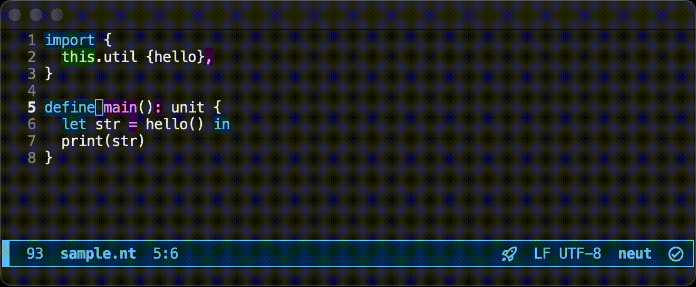

Neut Programming Language
Neut is a functional programming language with static memory management.
Its key features include:
- Full λ-calculus support
- Predictable automatic memory management
- The absence of annotations to the type system when achieving both of the above
Neut doesn't use GCs or regions. Instead, it takes a type-directed approach to handle resources.
What Does it Look Like?
Like the following:
// the obligated hello world
define hello(): unit {
print("Hello, world!\n")
}
// algebraic data types
data my-list(a) {
| Nil
| Cons(a, my-list(a))
}
// a recursive function with pattern matching
define noisy-length<a>(xs: my-list(a)): int {
match xs {
| Nil =>
0
| Cons(_, ys) =>
let my-message = "hey\n" in
print(my-message);
add-int(1, noisy-length(ys))
}
}
Static Memory Management — But How?
Neut translates a type into a function that can discard/copy the values of the type. By using those functions, the compiler translates programs so that every variable is used exactly once.
For example, if a variable is used twice, a translation like the following will happen:
// (before)
let xs: list(a) = [value-1, value-2] in
some-func(xs, xs) // `xs` is used twice
// ↓
// (after)
let xs: list(a) = [value-1, value-2] in
let (xs1, xs2) = copy-list-a(xs) in // `xs` is used once
some-func(xs1, xs2)
If you need more, see How to Execute Types.
You may wonder: "So we need to, for example, copy the whole list just to get its length? Isn't it the end of the world?". This topic is covered in Static Memory Management. As written there, Neut avoids such copyings by using the T-necessity operator in modal logic to achieve something like borrowing in Rust.
How Fast is This?
List of Other Basic Characteristics?
- Call by value
- Impure
- Compiles to LLVM IR and binary
- The type system ≒ CoC + ADT + (T-necessity) + (fix) - (universe hierarchy)
- That is, the usual one in functional programming, but a bit generalized
- Built-in LSP support
- Built-in rapid prototyping experience like scripting languages
- Built-in formatter like Go
Anything Else?
You might also find Neut's module system interesting. It distinguishes modules using the digests (checksums) of tarballs and defines module identities using version information. Although this is not the main point of the language, it still might be of interest. This topic is covered in the tutorial.
Also, Neut includes an LSP server, which provides things like code completion, error reporting on save, etc. See Lovely LSP Showcase to see it in action.
You can press the "→" key to go to the next page.
Installation
Installation
To install the toolchain, execute the installation script:
curl -sSL https://raw.githubusercontent.com/vekatze/neut/main/install.sh | bash
Then please follow the instructions.
You may also want to configure your editor.
If you prefer manual installation, see here.
Uninstallation
To uninstall,
- remove the binary
~/.local/bin/neut, - remove
NEUT_CORE_MODULE_URLandNEUT_CORE_MODULE_DIGESTin your shell config, and - remove cache directories created in your Neut projects (if desired).
Tutorial
Neut is a module-based functional programming language with static memory management via modality. This chapter is a quick introduction to this language.
In Hello External World, we will see Neut's "module-based" aspect. We will see how to use modules in Neut. You'll know how to create, build, execute, and release your modules.
In Programming in Neut, we will see Neut's "functional" aspect. We'll see how to write code in Neut.
In Static Memory Management, we will see Neut's "static" aspect. We will see how to handle memory operations in Neut. We'll also see Neut's technique to optimize memory allocation.
In Modality and Memory, we will see how Neut utilizes modality, especially the T-necessity operator, in its memory management.
This chapter assumes you are familiar with languages like Haskell, OCaml, or F#.
Hello External World
In this section, starting from the sacred hello world, we'll see how the development cycle in Neut proceeds.
What You'll Learn Here
We'll explore how to use modules in Neut. More Specifically:
- How to create a module
- How to build a module
- How to execute a module
- How to add dependencies
- How to publish your module
Creating a Module
Initialization
Run the following command:
neut create sample
This command creates a new directory ./sample/ and files inside the directory. This directory is an example of a module in Neut. A module in Neut is a directory that contains module.ens.
The command create creates a sample project that performs "hello world". This module can be built and executed by running the following commands:
cd ./sample
neut build sample --execute # => "Hello, world!"
Let's see what a module in Neut is like.
Structure
The content should be something like the following:
sample/
├── cache/
│ └── ...
├── source/
│ └── sample.nt
└── module.ens
The directory cache is where object files (binary files) and dependencies are put in. You won't have to go into the directory for daily use.
The directory source is where we put source files.
The file module.ens contains meta information about this project, such as dependencies.
You can change the locations of special directories such as build or source by using module.ens. See Modules for more information.
module.ens
The content of module.ens should be something like the below:
{
target {
sample {
main "sample.nt",
},
},
dependency {
core {
digest "(base64url-encoded checksum)",
mirror [
"https://github.com/.../X-Y-Z.tar.zst",
],
enable-preset true,
},
},
}
target specifies the name and the main file of the resulting executables. In the case above, neut build will create an executable file sample by compiling sources using the main function in sample.nt as the entry point.
dependency specifies external dependencies. Since our running example doesn't do much, the only dependency is core, which is the same as "prelude" in other languages.
The digest is the base64url-encoded checksum of the tarball.
The mirror is a list of URLs of the tarball.
The enable-preset makes the core library behave like Prelude in Haskell. That is, when enable-preset is true, specified names in the dependency are automatically imported into every file in our module.
Source files
Let's see the content of source/sample.nt:
// sample.nt
define main(): unit {
print("Hello, world!\n") // `print` is defined in `core`
}
The above code defines a function main that returns a value of type unit. This function prints "Hello, world!\n".
Here, the unit is an ADT that contains only one value Unit. The explicit definition of unit is as follows:
data unit {
| Unit
}
// The Haskell equivalent of the above is (ignoring variable naming conventions):
// data unit =
// Unit
Let's try editing the code as follows:
// sample.nt
import {
core.text.io {print-int},
}
define main(): unit {
print-int(42) // `print-int` is also defined in `core`
}
Then, build the project:
neut build sample --execute # => 42
You can also obtain the resulting binary:
neut build sample --install ./bin # creates a directory `bin` and put the resulting binary there
./bin/sample # => 42
Defining a function
Of course, you can define a function:
// sample.nt
import {
core.text.io {print-int},
}
define get-int(): int {
42
}
define main(): unit {
print-int(get-int())
}
A function can take arguments. Let's rewrite sample.nt into the below:
// sample.nt
import {
core.text.io {print-int},
}
define increment(x: int): int {
add-int(x, 1)
}
define my-add(x: int, y: int): int {
add-int(x, y)
}
define main(): unit {
print-int(my-add(10, increment(10))) // # => 21
}
Top-level items like define are called statements. You'll see more in the next section.
As in F#, statements in Neut are order-sensitive. If you were to define main before my-add, the code won't compile. For forward references, you'll have to explicitly declare names beforehand using a statement called nominal, which we'll see in the next section.
Publishing Your Module
Let's publish our module so others can use the functions my-add and increment.
You can create an archive of the current module using neut archive:
neut archive 0-1
ls ./archive # => 0-1.tar.zst
neut archive creates the directory archive at the root of your module. This command also creates an archive for the current module.
The name of a module archive must be something like 0-1, 2-3-1, 1-2-3-4-5-6.
The compiler interprets the names of archives as semantic versions. For example, if you create an archive 1-2-3 and then 1-2-4, the 1-2-4 is treated as a newer compatible version of 1-2-3.
This tarball can be controlled with your version control system like Git and pushed to the remote repository, as usual:
# the usual git thing
pwd # => path/to/sample/
git init
git commit --allow-empty -m "initial commit"
echo "build" > .gitignore
git add .gitignore archive/ module.ens source/
git commit -m "whatever"
git remote add origin git@github.com:YOUR_NAME/YOUR_REPO_NAME.git
git push origin main
This tarball can be used as a dependency, as described in the next section.
Adding Another Module to Your Module
neut get can be used to add external dependencies:
# create a new module
pwd # => ~/Desktop (for example)
neut create new-item
cd new-item
# ↓ add the previous module to our `new-item`
neut get some-name https://github.com/YOUR_NAME/YOUR_REPO_NAME/raw/main/archive/0-1.tar.zst
# you can try the following command for example:
neut get some-name https://github.com/vekatze/neut-sample/raw/main/archive/0-1.tar.zst
The command neut get fetches the tarball from the specified URL and adds it to the current module. The module can then be used as some-name in your module.
The information of the newly-added module is saved to module.ens:
{
target {
new-item {
main "new-item.nt",
},
},
dependency {
core { .. },
// ↓ HERE
some-name {
digest "..",
mirror [
"https://github.com/YOUR_NAME/YOUR_REPO_NAME/raw/main/archive/0-1.tar.zst",
],
},
},
}
The "real" name of an archive is the digest of the tarball. You define an alias of the module for your convenience.
Using Dependencies
These dependencies can then be used in your code:
// new-item.nt
import {
core.text.io {print-int},
some-name.sample {my-add},
}
define main(): unit {
print-int(my-add(10, 11)) // ← using `my-add`
}
Let's focus on import. This statement specifies the files we want to use in dependencies.
import consists of lines like the one below:
some-name.sample {my-add}
The first component of such a line (some-name) is our alias of the dependency.
What follows (sample) is the relative path to the file from the source directory of the dependency module. Here, you don't have to write the file extension .nt.
Like {my-add} in the example above, every bullet item of an import can optionally have a list of names. Names in these lists are made available after import, as in the example above.
Suppose you didn't write {my-add}. In this case, you can use the fully-qualified form of my-add:
// new-item.nt
import {
core.text.io {print-int},
some-name.sample, // removed `{my-add}`
}
define main(): unit {
// ↓ using the fully-qualified form of `my-add`
print-int(some-name.sample.my-add(10, 11))
}
So far, we have used the file (source-directory)/sample.nt in the dependency. What if the file we want to import isn't at the root of the source directory?
Suppose the dependency some-name contained a file source/entity/item.nt. In this case, the file item.nt can be imported from new-item.nt as follows:
import {
some-name.entity.item,
}
We only have to add .entity to specify the path to the file. No surprises.
Importing Files in the Current Module
We now know how to import files in dependencies. Using the same idea, we can also (of course) import files in the current module.
Let's create a new file new-item/source/foo/greet.nt with the following content:
// foo/greet.nt
define yo(): unit {
print("Yo")
}
This file can then be used from new-item/source/new-item.nt as follows:
// new-item.nt
import {
this.foo.greet {yo},
}
define main(): unit {
yo()
}
That is, the name of the current module is always this.
import can import multiple files and multiple names at the same time. For example, the following is a valid use of import:
import {
this.foo.greet {yo},
some-name.entity.item {add},
}
Prefixed Import
We can also use so-called qualified imports as in Haskell. Let's remember the example of fully-qualified names:
// new-item.nt
import {
core.text.io {print-int},
some-name.sample, // removed `{my-add}`
}
define main(): unit {
// ↓ using the fully-qualified form of `my-add`
print-int(some-name.sample.my-add(10, 11))
}
We'll rewrite this example into a "prefixed" form. Firstly, edit the module.ens as follows:
{
target {..},
prefix { //
S "some-name.sample", // ← alias: S -> some-name.sample
}, //
dependency {..},
}
By registering aliases of files in module.ens, you'll be able to use prefixes as aliases for specified files.
We can now rewrite the new-item.nt as follows:
// new-item.nt
import {
S, // == some-name.sample
core.text.io {print-int},
}
define main(): unit {
print-int(S.my-add(10, 11))
}
Unlike Haskell, these prefixes are defined per module, not per file. The prefixes of a file must be consistent inside a module.
What You've Learned Here
- Use
neut create MODULE_NAMEto create a module - Use
neut build TARGET_NAMEto build modules - Use
neut build TARGET_NAME --executeto execute modules - Use
neut getto add external dependencies - Use
neut archiveand push it to publish modules
Programming in Neut
Now that we know how to deal with modules, let's write programs in Neut.
What You'll Learn Here
- How to define and use variables
- How to define and use functions
- How to define and use ADTs
- How to perform parallel computations
- Other syntactic utilities
Programming in Neut
Variables and Functions
Below is an example of the use of variables and functions:
define hey(): unit {
let x = "hello" in
let y: int = 100 in
let z: float = 3.8 in
print("hey")
}
As in the above example, you can use let to define variables.
If you build the above code, you should notice that the compiler reports unused variables (x, y, and z in the example above). You can use the name _ when defining variables to suppress those warnings:
define hey(): unit {
// üåü
let _ = "hello" in
let _: int = 100 in
let _: float = 3.8 in
print("hey")
}
lets can be nested:
define hey(): unit {
let x =
// üåü
let y: int = 100 in
let z: float = 3.8 in
"hello"
in
print(x) // => hello
}
You can use e1; e2 as a syntax sugar of let _: unit = e1 in e2:
define hey(): unit {
// üåü
print("a");
print("b")
}
// ↓ (desugar)
define hey(): unit {
let _ = print("a") in
print("b")
}
Defining Functions at the Top Level
You can use the statement define to define functions:
// üåü
// defining an ordinary function
define my-func1(x1: int, x2: bool): bool {
x2
}
// üåü
// defining a recursive function
define my-func2(cond: bool): int {
if cond {
1
} else {
my-func2(not(cond)) // recursive call of `my-func2`
}
}
define can also define a function with implicit arguments (or "generics"):
// üåü
// The `a` in the angle bracket is the implicit argument of `id`
define id<a>(x: a): a {
x
}
define use-id(): int {
let str = 10 in
id(str) // calling `id` without specifying `a` explicitly
}
The definition of id in the example above is the same as the below:
// you can explicitly write the type of `a`
define id<a: type>(x: a): a { // `type` is the type of types
x
}
We can define id without using any implicit arguments as follows (just for comparison):
define id(a: type, x: a): a {
x
}
// using `id`
define use-id(): int {
let str = 10 in
id(int, str) // ← the first argument `int` is now made explicit
}
Defining Functions in a Body of a Function
You can use function to define an anonymous function:
define foo() {
let f =
// üåü
function (x: int, cond: bool) {
if cond {
x
} else {
add-int(x, 1)
}
}
in
f(10, False) // → 11
}
You can also use define in the body of a function to define recursive functions:
define foo() {
let f =
// üåü
define print-multiple-hellos(counter: int) {
if eq-int(counter, 0) {
Unit
} else {
print("hello\n");
print-multiple-hellos(sub-int(counter, 1))
}
}
in
f(10) // prints 10 "hello"s
}
The compiler reports an error if you rewrite the example above so that it uses the variable f more than once. This behavior is to avoid unexpected copying of values. You can satisfy the compiler by renaming f into !f. The next section will cover this topic.
Calling Functions
Functions f can be called against arguments e1, ..., en by writing f(e1, ..., en):
define my-func(x: int, y: int): int {
// üåü
add-int(x, y)
}
define use-my-func(): int {
// üåü
my-func(10, 20)
}
The syntax sugar of can be used to rewrite the above use-my-func into the below:
define use-my-func(): int {
// üåü
my-func of {
x = 10,
y = 20,
}
}
A lot of primitive functions (from LLVM) are also available. Please see Primitives for more.
Defining ADTs
You can use the statement data to define ADTs:
// üåü
data my-nat {
| My-Zero
| My-Succ(my-nat)
}
// In Haskell:
// data my-nat
// = My-Zero
// | My-Succ my-nat
//------------
// üåü
data my-list(a) {
| My-Nil
| My-Cons(a, my-list(a))
}
// In Haskell:
// data my-list a
// = My-Nil
// | My-Cons a (my-list a)
Arguments in constructors can optionally have explicit names:
data config {
// üåü
| Config(count: int, cond: bool)
}
You may want to write this vertically using a trailing comma:
data config {
// üåü
| Config(
count: int,
cond: bool,
)
}
Creating ADT Values
You can use constructors as usual functions:
define make-my-list(): my-list(int) {
// üåü
My-Cons(1, My-Cons(2, My-Nil))
}
define make-config(): term {
// üåü
Config of {
count = 10,
cond = True,
}
}
Using ADT values
You can use match to destructure ADT values:
define sum(xs: my-list(int)): int {
// üåü
match xs {
| My-Nil =>
0
| My-Cons(y, ys) =>
add-int(y, sum(ys))
}
}
Nested matching is also possible:
define foo(xs: my-list(int)): int {
match xs {
| My-Nil =>
0
// üåü
| My-Cons(y, My-Cons(z, My-Nil)) =>
1
| My-Cons(_, _) =>
2
}
}
Incidentally, the core library defines bool as follows:
// üåü
data bool {
| False
| True
}
A syntax sugar if is there to use this bool as in other languages:
define factorial(n: int) {
// üåü
if le-int(n, 0) { // `le-int(n, 0)` means `n <= 0`
1
} else {
mul-int(n, sub-int(n, 1)) // n * (n - 1)
}
}
The result of if can be bound to a variable:
define yo(cond: bool) {
let x =
// üåü
if cond {
1
} else {
2
}
in
print-int(x)
}
admit
You can use admit to postpone implementing a function and just satisfy the type checker:
define my-complex-function(x: int, y: bool): int {
// üåü
admit
}
assert
You can use assert as follows:
// factorial
define fact(n: int): int {
// üåü
assert "n must be non-negative" {
ge-int(n, 0)
};
if eq-int(n, 0) {
1
} else {
let next = sub-int(n, 1) in
mul-int(n, fact(next))
}
}
The type of assert ".." { .. } is Unit.
assert checks if a given condition is satisfied. If the condition is True, it does nothing. Otherwise, it reports that the assertion has failed and kills the program with exit code 1.
If you pass --mode release to neut build, assert does nothing.
Parallel Computation
You can use detach and attach to perform parallel computation:
define foo(): unit {
let t1: thread(unit) =
// üåü
detach {
let value = some-heavy-computation() in
print(value)
}
in
let t2: thread(unit) =
// üåü
detach {
let value = other-heavy-computation() in
print(value)
}
in
// üåü
let result-1 = attach { t1 } in
// üåü
let result-2 = attach { t2 } in
Unit
}
detach receives a term of type t and turns it into a term of type thread(t). Internally, detach creates a new thread and computes the term in that thread.
attach receives a term of type thread(t) and turns it into a term of type t. Internally, attach waits for a given thread to finish and extracts its result.
Auxiliary Syntaxes
- Additional syntax sugars are also available. For more, please see the language reference.
- If you want to call foreign functions (FFI), please see the here.
What You've Learned Here
- Use
letto define variables. - Use
functionordefineto define functions - Use
f(e1, ..., en)to call functions - Use
datato define ADTs. - Constructors of ADTs are normal functions.
- Use
matchto destruct ADT values - Use
detachandattachto perform parallel computation - You can find other syntax sugars in the language reference
Static Memory Management
Here, we'll see how to write performant programs in Neut.
What You'll Learn Here
- How memory regions are handled in Neut
- How to bypass copying resources
- How Neut optimizes memory allocations/deallocations
Linearity and Memory
In Neut, the content of a variable is copied according to its type if the variable is used more than once. Consider the following code:
// before compilation (pseudo code)
define foo(xs: list(int)): list(int) {
let ys = xs in // use `xs` (1)
let zs = xs in // use `xs` (2)
some-func(ys);
other-func(zs);
xs // use `xs` (3)
}
In the above code, the variable xs is used three times. Because of that, the content of xs is copied twice:
// after compilation (pseudo-code)
define foo(xs: list(int)): list(int) {
let xs1 = COPY-VALUE(list(int), xs) in
let xs2 = COPY-VALUE(list(int), xs) in
let ys = xs1 in
let zs = xs2 in
some-func(ys);
other-func(zs);
xs
}
Also, the content of a variable is discarded if the variable isn't used. Consider the following code:
// before compilation
define bar(xs: list(int)): unit {
Unit
}
In the above code, since xs isn't used, the content of xs is discarded as follows:
// after compilation (pseudo-code)
define bar(xs: list(int)): unit {
let _ = DISCARD-VALUE(list(int), xs) in
Unit
}
Technically speaking, these discarding/copying operations also happen when the variable is an immediate value like an integer:
define buz(x: int): unit {
Unit
}
↓
// pseudo-code
define bar(x: int): unit {
let _ = DISCARD-VALUE(int, x) in
Unit
}
In practice, however, discarding/copying operations on immediate values are optimized away.
In the literature, a use of a variable is called linear if the variable is used exactly once. Neut's compiler translates programs so that every non-linear use of variables becomes linear, ignoring arguments in discarding/copying functions.
If you're interested in how Neut achieves these discarding/copying operations, please see How to Execute Types.
To Be Conscious of Cloning Values
Suppose the content of a variable were to be copied simply by using it more than once. In that case, we might suffer from unintended cloning and encounter unexpected performance degradation.
The compiler thus requires us to prefix the name of a variable with ! when the variable needs to be copied. Let's consider the following code:
define make-pair(xs: list(int)): pair(list(int), list(int)) {
Pair(xs, xs)
}
When checking this code, the compiler will report an error because the code uses the variable xs twice and the variable isn't prefixed with !.
You can satisfy the compiler by renaming xs into !xs:
define make-pair(!xs: list(int)): pair(list(int), list(int)) {
Pair(!xs, !xs)
}
Free Variables in a Local Recursion
This ! is also required when using a free variable in a term-level define:
define multi-print(!message: text): unit {
let f =
define self(counter: int): unit {
if ge-int(counter, 10) {
Unit
} else {
// `!message` is a free variable of `self`
printf("message: {}\n", [!message]);
self(add-int(counter, 1))
}
}
in
f(0)
}
This is because free variables in a term-level define are cloned during recursion. Seeing how the above code is compiled might be illuminating:
// `self` is now closed thanks to the new parameter `!m` (lambda lifting)
define self(counter: int, !m: text): unit {
if ge-int(counter, 10) {
Unit
} else {
// üí´ note that `!m` is used twice
printf("message: {}\n", [!m]);
self(add-int(counter, 1), !m)
}
}
define multi-print(!message: text): unit {
let f =
function (counter: int) {
self(counter, !message)
}
in
f(0)
}
Cloning Values For Free
The prefix ! is unnecessary if the variable can be copied for free. For example, the following code will typecheck:
define make-pair(x: int): pair(int, int) {
Pair(x, x)
}
because we can "copy" integers for free (by simply using the same x twice).
The Problem: Excessive Copying
Now, suppose we defined a function length as follows:
define length(xs: list(int)): int {
match xs {
| Nil =>
0
| Cons(_, ys) =>
add-int(1, length(ys))
}
}
Also, suppose that we used this length as follows:
define use-length(!xs: list(int)): unit {
let len = length(!xs) in // use `length` to calculate the length of `!xs`
some-function(len, !xs) // then use `len` and `!xs`
}
Note that the variable !xs is used twice. Therefore, in this example, the content of !xs is copied just to calculate its length. This is a disaster. The end of the world. Every wish is crushed into pieces.
Luckily, there is a loophole for this situation.
The Solution: Noema Type
We need a way to bypass excessive copying. Here come noema types.
For any type t, Neut has a type &t. We'll call this the noema type of t. Let's introduce some terminologies:
- We'll call a term
ea noema if the type ofeis a noema type. - We'll say that a term is noetic if the type of the term is a noema type.
Unlike ordinary terms, a noema isn't discarded or copied even when used non-linearly. By using this behavior, we can avoid the disaster we have just seen.
Let's see how it works. We first redefine length. If the type t is an ADT type, you can inspect its content using case:
define length(xs: &list(int)): int {
case xs {
| Nil =>
0
| Cons(_, ys) =>
add-int(1, length(ys))
}
}
The main difference between case and match is that case doesn't perform free against its arguments. Because of that, this new length doesn't consume xs.
Also, note that the newly-bound variables in case are automatically wrapped with &(_). For example, in the above example, the type of ys is not list(int), but &list(int).
The use-length then becomes as follows:
define use-length(xs: list(int)): unit {
let len = length( ??? ) in
some-function(len, xs)
}
We need a way to create a noetic version of xs: list(int).
Creating a Noema
We can create a noema using let-on.
define use-length(xs: list(int)): unit {
// üåü
let len on xs =
// xs: &list(int)
length(xs)
in
// xs: list(int)
some-function(len, xs)
}
on takes a comma-separated list of variables. Variables specified there are then cast to a noema in the body of the let and cast back to non-noetic values in its continuation.
The syntax let-on is conceptually the following syntax sugar:
let result on x = e in
cont
// ↓ desugar
let x = unsafe-cast(a, &a, x) in // cast: `a` ~> `&a`
let result = e in // (use `&a`)
let x = unsafe-cast(&a, a, x) in // uncast: `&a` ~> `a`
cont
We'll call the content of noetic value xs a hyle. In the example, the hyle of xs at length(xs) is [1, 2, 3].
The result of let-on (that is, len in this case) can't include any noetic term. This restriction is required so that a noetic value won't outlive its hyle. If interested, please see the corresponding part of the language reference for more information.
Embodying a Noema
Incidentally, you can also create a value of type a from a value of type &a, as follows:
define make-pair-from-noema<a>(x: &a): pair(a, a) {
Pair(*x, *x)
}
By writing *e, you can clone the hyle of the noema e along the type a, keeping the hyle intact.
Allocation Canceling
Let's see another aspect of Neut's memory management. The compiler can sometimes optimize away memory allocation thanks to its static nature. Consider the following code:
data int-list {
| Nil
| Cons(int, int-list)
}
// [1, 5, 9] => [2, 6, 10]
define increment(xs: int-list): int-list {
match xs {
| Nil =>
Nil
| Cons(x, rest) => // ← "the `Cons` clause"
let foo = add-int(x, 1) in
let bar = increment(rest) in
Cons(foo, bar)
}
}
The expected behavior of the Cons clause would be something like the following:
- obtain
xandrestfromxs freethe outer tuple ofxs- calculate
foo (= add-int(x, 1))andbar (= increment(rest)) - allocate memory region using
mallocto representCons(foo, bar) - store the calculated values to the pointer and return it
However, the compiler knows the following two facts during compilation:
- The size of outer tuples of
Cons(x, rest)andCons(foo, bar)are the same - The outer tuple of
Cons(x, rest)will never be used after extracting its contents
Thanks to this knowledge, the compiler can optimize away a pair of free and malloc, as follows:
- obtain
xandrestfromxs - calculate
foo (= add-int(x, 1))andbar (= increment(rest)) - store the calculated values to
xs(overwrite)
When a free is required, the compiler looks for a malloc in the continuation that is the same size and optimizes away such a pair if one exists. The resulting assembly code thus performs in-place updates.
How Effective Is This Optimization?
Below is the result of benchmarking of a bubble sorting program. This test creates a random list of length N and performs bubble sort on the list.

This benchmark executes the following sort function:
data int-list {
| My-Nil
| My-Cons(int, int-list)
}
nominal {
_insert(v: int, xs: int-list): int-list,
}
// üåü
inline _swap-gt(cond: bool, v: int, x: int, xs: int-list): int-list {
if cond {
My-Cons(x, _insert(v, xs))
} else {
My-Cons(v, My-Cons(x, xs))
}
}
define _insert(v: int, xs: int-list): int-list {
match xs {
| My-Nil =>
My-Cons(v, My-Nil)
| My-Cons(y, ys) =>
_swap-gt(gt-int(v, y), v, y, ys)
}
}
define sort(xs: int-list, acc: int-list): int-list {
match xs {
| My-Nil =>
acc
| My-Cons(y, ys) =>
sort(ys, _insert(y, acc))
}
}
The above is the "faster" implementation of bubble sorting in Neut. The key person is _swap-gt. The above code defines _swap-gt as an inline function. Therefore, in _insert, the definition of _swap-gt is expanded, which makes allocation canceling of My-Cons in _insert possible.
The "slower" implementation can be obtained by replacing inline at the üåü with define. In this implementation, since the definition of _swap-gt can't be expanded in _insert, allocation canceling of My-Cons in _insert is not possible.
I also added the result of Haskell just for reference.
Additional notes:
- You can find the source files used in this benchmark here.
- I used my M1 Max MacBook Pro (32GB) to run this benchmark.
If you're interested in more benchmarking results, please see Benchmarks.
What You've Learned Here
- Neut uses noema types to bypass copying resources
- The compiler finds pairs of
malloc/freethat are the same size and optimizes them away
Modality and Memory
At first glance, the let-on stuff in the previous section might seem a bit artificial.
This let-on can actually be understood as a syntax sugar over the T-necessity operator. Below, we'll first see how Neut incorporates the necessity modality and then how let-on is desugared using the modality.
What You'll Learn Here
- How layers in Neut are organized
- How to introduce "boxed" terms
- How to use "boxed" terms
- How the borrowing-like operation in Neut is organized using the T-necessity operator
Introducing the Concept of Layers
For every type a, Neut has a type meta a. As we will see, this meta is a necessity operator, often written as □ in the literature.
In Neut, given e: a, you can create values of type meta a by writing something like box {e}. Here, the e is not arbitrary since, if so, we must admit propositions like a -> □a, making every truth a necessary truth.
In Neut, the condition that e must satisfy is described using layers. So, before using box, let's learn what layers are like.
The Basics of Layers
For every term in Neut, an integer value called layer is defined.
Let's see how layers are calculated. The layer of the body of a define is defined to be 0:
define foo(): unit {
// here is layer 0
Unit
}
If you define a variable at layer N, the layer of the variable is also N:
// here is layer N
let x = Unit in
x // ← `x` is a variable at layer N
The layer of (an occurrence of) a constant is defined to be the layer in which the constant is used:
define my-func(): int {
10
}
define use-my-func() {
// layer 0
let v1 =
my-func() // ← this `my-func` is at layer 0
in
... // ← some layer operations here
// layer 3 (for example)
let v2 =
my-func() // ← this `my-func` is at layer 3
in
...
}
Terms that aren't related to modality won't change layers. For example, the following is the layer structure of function and let:
// here is layer N
function (x1: a1, ..., xn: an) {
// here is layer N
e
}
// here is layer N
let x =
// here is layer N
e1
in
// here is layer N
// (x: a at layer N)
e2
As long as you don't use modality-related terms, the layer of a term (and a subterm) is always 0.
Layers and Variables
In Neut, a variable defined at layer n can only be used at layer n. For example, the following is not a valid term:
define bar(): unit {
// here is layer 0
let x = Unit in // ← `x` is defined at layer 0
... // ← some layer operations here
// layer 3 (for example)
let v2 =
x // ← ERROR
in
...
}
This is because the variable x is defined at layer 0 but used at layer 3 (≠ 0).
□-Introduction: Putting Values into Boxes
Now that we have layers, we can talk about how to interact with values of type meta a.
Syntax
A term of type meta a can be created using the syntactic construct box.
The syntax of box is as follows:
// here is layer (n+1)
// - x1: &a1 at (n+1)
// - ...
// - xm: &am at (n+1)
box x1, ..., xm {
// here is layer n
// - x1: a1 at n
// - ...
// - xm: am at n
e1
}
Given a term e: A, the type of box x1, ..., xn {e} is meta A.
Note that the types of xis must be of the form &A.
box turns &a1, ..., &an into a1, ..., an inside its body.
Semantics
Operationally, box x1, ..., xn { e } copies all the x1, ..., xn and executes e:
box x1, ..., xn { e }
↓
// psueudo-code
let x1 = copy(x1) in
...
let xn = copy(xn) in
e
As you can see from the above semantics, terms of type meta a have the same forms as a. Thus, the type meta a is compiled into the same closed function as a.
Example
Let's see some examples. Below is an example of box:
define some-function(x: &int): meta int {
// here is layer 0
// (x: &int at 0)
box x {
// here is layer -1
// (x: int at -1)
x
}
}
The sequence x1, ..., xn can be empty. Thus, below is also a valid term:
define box-unit(): meta unit {
// here is layer 0
box {
// here is layer -1
Unit
}
}
On the other hand, below isn't a valid term:
define some-function(x: bool): meta bool {
// here is layer 0
box {
// here is at layer -1
not(x)
}
}
This is because the variable x is defined at layer 0 but used at layer -1.
□-elimination: Extracting Values from Boxes
We can extract values from a box using letbox.
Syntax
The syntax of letbox is as follows:
letbox x on y1, ..., ym =
e1
in
e2
Or, with a bit verbose comments on layers and types:
// here is layer n
// - y1: a1 @ n
// - ...
// - ym: am @ n
letbox x on y1, ..., ym =
// here is layer (n+1)
// - y1: &a1 @ (n+1)
// - ...
// - ym: &am @ (n+1)
e1
in
// here is layer n
// - y1: a1 @ n
// - ...
// - ym: am @ n
e2
Given a boxed term e1: meta a, letbox binds it to x: a, and executes e2.
Semantics
The operational semantics of letbox is as follows:
letbox x on y1, ..., ym = e1 in
e2
↓
// pseudo-code
let y1 = cast(from=a1, to=&a1, y1) in
...
let ym = cast(from=am, to=&am, ym) in
let x = e1 in
let y1 = cast(from=&a1, to=a1, y1) in
...
let ym = cast(from=&am, to=am, ym) in
e2
Examples
Let's see some examples. Below is a simple example of letbox:
define use-letbox(): bool {
let x = True in
// here is layer 0
letbox value =
// here is layer 1
box {
// here is layer 0
x
}
in
// here is layer 0
value
}
A bit more complex example:
// helper function
define from-noema(x: &bool): meta bool {
box x {
x
}
}
define use-letbox(): bool {
let x = True in
let y = True in
// here is layer 0
// - x: bool @ 0
// - y: bool @ 0
letbox value on x =
// here is layer 1
// - x: &bool @ 1
// - y: bool @ 0
from-noema(x)
in
value
}
Below isn't a well-layered term:
define use-letbox(x: meta bool): bool {
// here is layer 0
letbox value =
// here is layer 1
x // ← error: the layer of `x` is 0 but used at layer 1
in
x
}
Combination of box and letbox
Let's see how box and letbox work in harmony with each other.
The Axiom K in Neut
We can prove the axiom K in the literature using box and letbox:
// Axiom K: □(a -> b) -> □a -> □b
define axiom-K<a, b>(f: meta (a) -> b, x: meta a): meta b {
box {
letbox f' = f in
letbox x' = x in
f'(x')
}
}
In this sense, the meta is a necessity operator that satisfies the axiom K.
Don't confuse meta (a) -> b with (meta a) -> b.
Creating and Embodying a Noema
The following code creates a noema using letbox and embodies it using box:
define test-embody(): unit {
let x: int = 1 in
letbox result on x = // ← creates a noema
box x { // ← embodies a noema
add-int(x, 2)
}
in
print-int(result) // → "3"
}
Borrowing a List
Let's take a look at a more "real-world" example (It's funny to say "real-world" when talking about modality). Suppose that we have the following function:
// returns `True` if and only if the input `xs` is empty.
is-empty: (xs: &list(int)) -> bool
You can use this function via box and letbox:
define borrow-and-check-if-empty(): unit {
let xs: list(int) = [1, 2, 3] in
// layer 0
// (xs: list(int) @ 0)
letbox result on xs =
// layer 1
// (xs: &list(int) @ 1)
let b = is-empty(xs) in // ← using the borrowed `xs`
if b {
box {True}
} else {
box {False}
}
in
// layer 0
// (xs: list(int) @ 0)
if result {
print("xs is empty\n")
} else {
print("xs is not empty\n")
}
}
In the above example, the variable xs: list(int) is turned into a noema by letbox, and then used by is-empty. Since xs is a noema inside the letbox, the is-empty doesn't have to consume the list xs.
Quote: A Shorthand for Boxes
As in above, we can turn a bool into meta bool by doing something like this:
define wrap-bool(b: bool): meta bool {
if b {
box {True}
} else {
box {False}
}
}
You might find it a bit wordy. Indeed, this translation can be mechanically done on certain "simple" types. For example, we can do the same to either(bool, unit):
define wrap-either(x: either(bool, unit)): meta either(bool, unit) {
match x {
| Left(b) =>
if b {
box {Left(True)}
} else {
box {Left(False)}
}
| Right(u) =>
box {Right(Unit)}
}
}
We just have to decompose values and reconstruct them with box added.
Neut has a syntactic construct quote that bypasses these manual translations. Using quote, the above two functions can be rewritten into the following functions:
define wrap-bool(b: bool): meta bool {
quote {b}
}
define wrap-either(x: either(bool, unit)): meta either(bool, unit) {
quote {x}
}
The example of is-empty can now be rewritten as follows:
define foo(): unit {
let xs: list(int) = [1, 2, 3] in
// layer 0
// (xs: list(int) @ 0)
letbox result on xs =
// layer 1
// (xs: &list(int) @ 1)
quote {is-empty(xs)}
in
// layer 0
// (xs: list(int) @ 0)
if result {
print("xs is empty\n")
} else {
print("xs is not empty\n")
}
}
quote cannot be used against types that might contain types of the form &a or (a) -> b. For example, quote cannot be applied against values of the following types:
&list(int)(int) -> booleither(bool, &list(int))either(bool, (int) -> bool)
quote is after all just a shorthand.
□-elimination-T: Unboxing within the Current Layer
Remember the example of is-empty:
define borrow-and-check-if-empty(): unit {
let xs: list(int) = [1, 2, 3] in
letbox result on xs =
// here is layer 1
let b = is-empty(xs) in
(..)
in
(..)
}
Although the above term is valid, the term obtained by parameterizing is-empty is not valid:
define borrow-and-check-if-empty(is-empty: (&list(int)) -> bool): unit {
let xs: list(int) = [1, 2, 3] in
letbox result on xs =
// here is layer 1
let b = is-empty(xs) in // ← error
(..)
in
(..)
}
This is because the variable is-empty is defined at layer 0 but used at layer 1.
letbox-T is the loophole for such situations.
Syntax
The syntax of letbox-T is as follows:
// here is layer n
// (y1: a1): a variable at layer n
// ...
// (ym: am): a variable at layer n
letbox-T x on y1, ..., yn =
// here is layer n
// (y1: &a1): a variable at layer n
// ...
// (ym: &am): a variable at layer n
e1
in
// here is layer n
// (y1: a1): a variable at layer n
// ...
// (ym: am): a variable at layer n
e2
That is, letbox-T is the same as letbox except that it doesn't change the layer structure.
Semantics
The operational semantics of letbox-T is again the same as letbox:
letbox-T x on y1, ..., ym = e1 in
e2
↓
let y1 = unsafe-cast(a1, &a1, y1) in
...
let ym = unsafe-cast(am, &am, ym) in
let x = e1 in
let y1 = unsafe-cast(&a1, a1, y1) in
...
let ym = unsafe-cast(&am, am, ym) in
e2
Example: Parameterizing a Callback
Using letbox-T, we can parameterize is-empty as follows:
define borrow-and-check-if-empty(is-empty: (&list(int)) -> bool): unit {
let xs: list(int) = [1, 2, 3] in
// layer 0
// (xs: list(int) @ 0)
// (is-empty: &list(int) -> bool @ 0)
letbox-T result on xs =
// layer 0
// (xs: &list(int) @ 0)
// (is-empty: &list(int) -> bool @ 0)
let b = is-empty(xs) in
(..)
in
// layer 0
// (xs: list(int) @ 0)
// (is-empty: &list(int) -> bool @ 0)
(..)
}
Note that the body of letbox-T in the example above is not layer 1 but layer 0.
Example: The Axiom T in Neut
You can prove the axiom T by using letbox-T:
// Axiom T: □a -> a
define axiom-T<a>(x: meta a): a {
letbox-T tmp = x in
tmp
}
Note that the following is not well-layered:
define axiom-T<a>(x: meta a): a {
letbox tmp = x in
tmp
}
since the variable x is defined at layer 0 but used at layer 1.
In this sense, the meta is a necessity operator that satisfies the axiom T.
(I know this is a bit too informal, but anyway)
Example: Desugaring let-on Using the T-necessity
Now we can desugar let-on as follows:
let x on y, z = e1 in
e2
↓
letbox-T x on y, z = quote {e1} in
e2
and this is why the type of e1 must be restricted to some extent. Now we can see that those restrictions come from quote.
Layer Closedness of Functions
There's one last condition that we must require: every free variable in a function must be at the layer of function. For example, the following is not a valid term:
define use-function(x: meta int): meta () -> int {
// layer 0
let x = 10 in
box {
// layer -1
function () {
letbox value = x in
value
}
}
}
This is because the function is at layer -1, but the free variable x is at layer 0.
If it were not for this condition, the following would be well-typed and well-layered:
define joker(): () -> unit {
// layer 0
let xs: list(int) = [1, 2, 3] in
letbox f on xs =
// layer 1
// xs: at 1
box {
// layer 0
// üí´
function () {
letbox k =
// 1
let len =
// using xs@1 in function@0
length(xs)
in
box {Unit}
in
Unit
}
}
in
f
}
The inner function (üí´), which depends on xs: &list(int), is bound to f after evaluating the outer letbox. Thus, we would be able to cause the dreaded use-after-free by deallocating xs and then calling the function f.
What You've Learned Here
- Layer structures of
box,letbox,letbox-T, andfunction - Using
boxorquoteto create terms of typemeta {..} - Using
letboxorletbox-Tto use terms of typemeta {..} - Decomposition of
let-onintoletbox-Tandquote
Language Reference
In this chapter, you should be able to find all the details of Neut.
Commands
The command neut has subcommands like neut build, neut get, etc. This section describes those subcommands.
Table of Contents
- Common Notes
- neut build
- neut check
- neut clean
- neut archive
- neut create
- neut get
- neut format-source
- neut format-ens
- neut zen
- neut lsp
- neut version
Common Notes
Subcommands and Modules
Most of the subcommands of neut must be executed inside a module. If you execute such a subcommand outside a module, the command will emit an error like the one below:
neut build foo
#=> Error: Couldn't find a module file (Context: /Users/foo/Desktop)
Only the following subcommands can be used outside a module:
neut createneut version
Shared command line options:
Some subcommands share command line options. The list of them is as follows:
--no-colorcan be used to turn off ANSI colors
neut build
neut build builds the current module and creates executables. It also creates cache files of the source files for faster compilation.
neut build TARGET builds the target TARGET defined in module.ens. For example, suppose that the module.ens of a module contains the following section:
{
// ..
target {
foo {
main "foo.nt",
},
bar {
main "item/bar.nt",
},
},
// ..
}
In this case, running neut build foo creates the executable foo by building the current module, using the main in foo.nt as the entry point.
The resulting binaries are put inside the module's build directory. You might want to use the option --install to copy those binaries.
Example
# creates a sample project
neut create hello
cd hello
# build and run
neut build hello --execute # => "Hello, world!"
# build the module, copy the resulting binary, and execute the binary
neut build hello --install ./bin
./bin/hello #=> "Hello, world!"
--execute
If you pass --execute to neut build, the resulting binaries are executed after the build.
--install DIR
If you pass --install DIR to neut build, the resulting binaries are copied to the specified directory.
--skip-link
By default, neut build builds all the source files into object files and then links them all to create an executable. You can pass --skip-link to neut build to skip the last linking phase.
--emit
You can emit LLVM IR by passing --emit llvm to neut build. In this case, you must also pass --skip-link.
--mode
You can pass --mode {develop,release} like the below:
neut build my-app --mode release
If you don't specify --mode, the mode defaults to develop.
The value passed here can be obtained from source files by using introspect:
define foo(): unit {
introspect build-mode {
| release =>
// ..
| develop =>
// ..
}
}
--end-of-entry
--end-of-entry ANY_STRING can be used to add separators between compiler diagnostics. This feature is for linter wrappers like flycheck.
For example, suppose we have this ill-typed program:
define main(): int {
type
}
When running neut build TARGET, the compiler reports errors like the below:
/path/to/sample/source/hey.nt:1:8
Error: Expected:
() -> unit
Found:
() -> int64
/path/to/sample/source/hey.nt:2:3
Error: Expected:
int64
Found:
type
On the other hand, when running neut build TARGET --end-of-entry EOE, the text EOE is inserted after each entry:
/path/to/sample/source/hey.nt:1:8
Error: Expected:
() -> unit
Found:
() -> int64
EOE
/path/to/sample/source/hey.nt:2:3
Error: Expected:
int64
Found:
type
EOE
These can be used to parse entries.
neut check
neut check type-checks all the files in the current module. It also creates cache files of the source files for faster compilation.
--no-padding
The compiler prints diagnostics without padding spaces if --no-padding is set.
Without --no-padding:
/path/to/sample/source/hey.nt:1:8
Error: Expected:
() -> unit
Found:
() -> int64
/path/to/sample/source/hey.nt:2:3
Error: Expected:
int64
Found:
type
With --no-padding:
/Users/vekatze/Desktop/hey/source/hey.nt:1:8
Error: Expected:
() -> unit
Found:
() -> int64
/Users/vekatze/Desktop/hey/source/hey.nt:2:3
Error: Expected:
int64
Found:
type
This option is for linter wrappers like flycheck.
--end-of-entry
The same as the one of neut build.
neut clean
neut clean removes the cache files in the current module's cache directory.
More specifically, this command removes the following directory in the current module:
(cache-directory)/build/(platform)/(compiler-version)/
An example of a removed directory:
cache/build/arm64-darwin/compiler-0.8.0/
neut archive
neut archive VERSION creates a module tarball that can be used by neut get.
Notes on Versions
VERSION must be X1-X2-..-Xn, where all the integers are non-negative. For example, the following are valid versions:
1-00-1-02-1-30-0-0-3
When running neut archive VERSION, this command searches the archive directory to get all the compatible older versions. For example, suppose the archive directory contains the following files:
1-0.tar.zst1-1.tar.zst2-0.tar.zst2-1.tar.zst
In this case, the command neut archive 2-2 searches the archive directory and gets 2-0 and 2-1 as the older compatible versions of 2-2. Here, these "older" versions are determined according to Semantic Versioning.
This command then does the following:
- Computes all the digests of these older compatible tarballs
- Creates a new
module.ensthat contains the list of the older digests - Packs the ens file and the other required files to create a tarball
2-2.tar.zst
This digest information inside module.ens of 2-2.tar.zst should appear like the below:
{
target {..},
dependency {..},
antecedent [
"Bp8RulJ-XGTL9Eovre0yQupJpeS3lGNk8Q6QQYua7ag", // ← digest of 2-0.tar.zst
"zptXghmyD5druBl8kx2Qrei6O6fDsKCA7z2KoHp1aqA", // ← digest of 2-1.tar.zst
],
}
This information is then used when resolving dependencies.
You can extract a resulting tarball to see that antecedent information is indeed there.
The module.ens in your module isn't modified by archive. This subcommand creates a new module.ens and put it into the tarball.
Using the Newest Compatible Version
Consider the following dependency relation:
- Module
Adepends onBandC. - Module
Bdepends onD (version 1.1). - Module
Cdepends onD (version 1.2).
A ──> B ──> D (1.1)
│
└───> C ──> D (1.2)
Thanks to the antecedent information inside D (1.2), the compiler can detect that D (1.2) is a newer compatible module of D (1.1). The compiler utilizes this knowledge to rewrite the above relation into:
A ──> B ──┐
│ │
└───> C ──┴──> D (1.2)
The compiler always uses the newest compatible modules in the dependency relation by this procedure.
This rewriting won't work if the minor "compatible" version D (1.2) isn't compatible with D (1.1). This incompatibility is a bug of the library D (1.2) and should be fixed by the module author.
Utilizing the Compatibility Relation
As an exercise, suppose the following:
- Serious bugs were discovered in
D (1.1)andD (1.2) - The grave-look author of
Dreleased a bug-fix releaseD (1.3)in a hurry - The happy authors of
BandCare on a honeymoon vacation in Hawaii
In this case, we don't have to wait for the authors of B and C to update their dependencies. Instead, we can just add D (1.3) to our module's dependency:
A ──> B ──┐
│ │
├───> C ──┴──> D (1.2)
│
└────────────> D (1.3)
Then, the compiler automatically rewrites the above relation into:
A ──> B ───┐
│ │
├───> C ───┤
│ │
└──────────┴──> D (1.3)
So we don't have to rain on their happy parade in Waikiki Beach.
neut create
neut create NAME creates a directory ./NAME/ and adds files there to start a new project.
neut get
neut get ALIAS URL fetches and builds external modules specified by URL and adds it to the current module as a dependency under the name ALIAS.
neut get some-name https://github.com/USER_NAME/REPO_NAME/raw/main/archive/0-1.tar.zst
Here, the URL must be the URL of an archive that was created by neut archive.
After executing neut get, the information of the new module is saved to module.ens:
{
target {
// ..
},
dependency {
// ..
// üåü (something like this is added automatically)
some-name {
digest "xNmQu6It81lGBy1sKvk5_jE4Qt8w8KgkVgGj0RBbbrk",
mirror [
"https://github.com/USER_NAME/REPO_NAME/raw/main/archive/0-1.tar.zst",
],
},
// ..
},
}
The digest is the base64url-encoded checksum of the tarball.
The mirror is a list of URLs that can be used to obtain the tarball.
Modules in Neut are distinguished by their digests.
neut get can be used to "update" dependencies. Suppose you specify an existing ALIAS when running neut get ALIAS URL. In this case, if the digest of the new tarball isn't the same as the existing one, the existing dependency in the ens file is replaced by the newer one. If the digest is the same as the existing one, the URL is added to the list mirror.
You can remove a dependency in the ens file to "remove" the module from your module.
You can import dependencies from source files. See the notes on import in Statements for information on how to use definitions in external dependencies.
neut format-source
neut format-source path/to/source/file.nt formats specified source file and outputs the result to stdout.
--in-place
When the option --in-place is set, format-source performs in-place update.
--minimize-imports
When the option --minimize-imports is set, format-source removes all the unused items in import {..}.
neut format-ens
neut format-ens path/to/source/file.ens formats specified ens file and outputs the result to stdout.
You can also pass - to receive input from stdin:
cat module.ens | neut format-ens -
--in-place
When the option --in-place is set, format-source performs in-place update.
neut zen
neut zen path/to/source/file.nt builds and executes specified file as if it were an entry point.
The subcommand zen treats the function zen inside the given file as its entry point (that is, main).
Thus, the type of the function zen must be () -> unit:
define zen(): unit {
print("hello, world!\n")
}
This command is intended to be used for rapid prototyping.
Please see Rapid Prototyping to see neut zen in action.
Zen Experience
Suppose that you created a new function deep inside your module.
You can technically create a test function for the function and check its behavior. Or modify the main function to call the new function just to see its behavior.
It might be, however, a bit cumbersome. We'd love to achieve rapid try-and-error cycles in certain circumstances.
You can use the command zen here. Suppose that a file some-file.nt contains a function foo that is defined as in the below:
define foo(x: int): int {
do-complex-calculation(x)
}
The behavior of foo can be inspected rapidly by defining a function named zen in the file:
// the type of `zen` must be `() -> unit`
define zen(): unit {
print-int(foo(10))
}
Then, execute the following command:
neut zen path/to/some-file.nt # => (the result of `foo(10)` is printed)
This can be done even if some-file.nt isn't an entrypoint of the module. You can think of functions named zen as alternative mains.
neut lsp
neut lsp starts the LSP server. The LSP server has features like linting, jump to definition, etc. More specifically, the LSP server supports the following LSP capabilities:
textDocument/didOpen(lint on open)textDocument/didSave(lint on save)textDocument/completion(complete)textDocument/definition(jump to definition)textDocument/documentHighlight(highlight symbols)textDocument/references(find references)textDocument/formatting(format)textDocument/hover(show the type of a symbol)
For more information, please see Lovely LSP Showcase and Editor Setup.
neut version
neut version prints the version of the compiler.
Example
neut version
#=> X.Y.Z
Modules
A directory (including its all children) is a module if it contains a file named module.ens.
Below is the list of configurations of module.ens.
Table of Contents
target
The field target defines the entry points of a module. It should look like the following:
{
// ..
target {
TARGET-1 {
main "path/to/source/file-1.nt"
},
// ..
TARGET-N {
main "path/to/source/file-n.nt"
},
},
// ..
}
Suppose that your module has the following target in module.ens:
{
// ..
target {
foo {
main "foo.nt",
},
bar {
main "item/whatever.nt"
},
},
// ..
}
In this case, your module has two targets: foo and bar. The entry point of foo is the main function in (source-dir)/foo.nt. The entry point of bar is the main function in (source-dir)/item/whatever.nt.
The names in target can be specified when running neut build. For example, given the above definition of target, you can run neut build foo.
The names of targets are also used as the names of executables. For example, if you run neut build foo --install ./bin/, an executable named foo will be created under the directory ./bin/.
The field target is optional. The default value of target is {}.
compile-option
You can add compile-option to a target as follows:
{
target {
foo {
main "foo.nt",
// ↓ here
compile-option [
"-g",
"-O0",
"-fsanitize=address",
"$SOME_ENV_VAR",
"$(some-command arg)",
],
},
},
}
The compiler passes the options specified here to clang when compiling LLVM IRs into object files.
In compile-option, you can use environment variables and shell interpolations.
The field compile-option is optional. The default value of compile-option is [].
link-option
You can add link-option to a target as follows:
{
target {
foo {
main "foo.nt",
// ↓ here
link-option [
"-g",
"-O0",
"$SOME_ENV_VAR",
"$(some-command)",
],
},
},
}
The compiler passes the options specified here to clang when linking object files.
In link-option, you can use environment variables and shell interpolations.
The field link-option is optional. The default value of link-option is [].
build-option
You can add build-option to a target as follows:
{
target {
foo {
main "foo.nt",
// ↓ here
build-option [
"$(pkg-config openssl --libs --cflags)",
"whatever",
],
},
},
}
Adding an element to build-option is the same as adding the element to both compile-option and link-option.
In build-option, you can use environment variables and shell interpolations.
The field build-option is optional. The default value of build-option is [].
dependency
The field dependency defines the dependencies of a module. It should look like the following:
{
// ..
dependency {
foo {
digest "(base64url-encoded sha256 checksum)",
mirror [
"URL-1",
// ..
"URL-N",
],
enable-preset <true | false>, // ← optional field
},
// ..
bar { .. },
},
// ..
}
An example of dependency:
{
// ..
dependency {
core {
digest "ub3MUXVac9F1rebIhl_Crm2_GJ7PzCAekgp8aYH3-mo",
mirror [
"https://github.com/vekatze/neut-core/raw/main/archive/0-38.tar.zst",
],
enable-preset true,
},
some-package {
digest "F_ST8PtL9dLCDWVZ4GpuS7sviUU0_-TUz2s6iw-86KU",
mirror [
"https://example.com/foobarbuz/packages/22-3.tar.zst",
],
},
},
// ..
}
The field digest specifies the checksum of the tarball of the dependency. The digest is a Base64URL-encoded SHA256 checksum of the tarball. This digest is the "real" name of this dependency, and used as an identifier.
The field mirror specifies a list of URLs from which the compiler can fetch the tarball. When running neut get, the compiler will try to get the tarball if necessary, using this list from the beginning to the end.
The optional field enable-preset specifies whether to import presets automatically, as in "prelude" in other languages. This field should only be used (and set to be true) with the core library. For more information, see the explanation of preset in this section.
The field dependency is optional. The default value of dependency is {}.
archive
The field archive defines the path of the directory into which the subcommand neut archive store tarballs. It should look like the following:
{
// ..
archive "my-archive",
// ..
}
The field archive is optional. The default value of archive is ./archive/.
cache
The field cache defines the path of the directory to store object files, executables, dependencies, etc. It should look like the following:
{
// ..
cache ".cache",
// ..
}
The field cache is optional. The default value of cache is ./cache/.
source
The field source defines the path of the directory to store source files. It should look like the following:
{
// ..
source ".",
// ..
}
The field source is optional. The default value of source is ./source/.
prefix
The field prefix defines the aliases of source files. It should look like the following:
{
// ..
prefix {
Foo "this.foo",
// ..
Bar "this.item.bar",
},
// ..
}
Each field in prefix specifies an alias of the specified source file. For example, given the definition above, the code
import {
this.foo,
this.item.bar {some-func},
}
can be rewritten into the following:
import {
Foo,
Bar {some-func},
}
The prefixes specified in a module.ens of a module can be used only in the module.
The field prefix is optional. The default value of prefix is {}.
foreign
The field foreign defines a way to compile external source files. It should look like the following:
{
// ..
foreign {
input [
"source/foo.c",
"source/bar.c",
],
output [
"foo.o",
"bar.o"
],
script [
"{{clang}} -c -flto=thin -O2 source/foo.c -o {{foreign}}/foo.o",
"{{clang}} -c -flto=thin -O2 source/bar.c -o {{foreign}}/bar.o",
]
}
}
input
The field input specifies the list of external source files. The paths are relative to the root of the module.
When running neut archive, the compiler adds all the input files to the resulting tarballs.
output
The field output specifies the resulting files of foreign source files. The paths are relative to a directory named foreign directory. You can find a foreign directory in the build directory.
When running neut build, the compiler links all the output files in the foreign directory (in addition to Neut's "domestic" object files).
script
The field script specifies how to compile external source files. When running neut build, the compiler executes the specified commands immediately after resolving all the imports.
In the field script, you can use the following placeholders:
{{clang}}: Theclangused by the compiler{{foreign}}: The foreign directory
The compiler skips running the script if all the files in output are newer than input.
When running the script, the compiler sets the current working directory to the module's root directory.
Notes
The field foreign is optional. The default value of foreign is:
{
input [],
output [],
script [],
}
An example of foreign can be found in the core library.
The compiler links the resulting foreign object files without any name mangling. You're strongly encouraged to prefix names in your foreign sources with your module name and the major version to avoid name collision. You can find an example of prefixed names here.
static
The field static defines the list of static files that can be embedded into source files at compile time. It should look like the following:
{
// ..
static {
some-file "relative/path/from/the/module/root/to/some-file.txt",
other-file "relative/path/from/the/module/root/to/other-file.txt",
},
// ..
}
You can use the keys defined here in source files using import and include-text:
// foo.nt
import {
// ..
static {some-file, other-file}
// ..
}
define use-some-file(): unit {
let t1: &text = include-text(some-file) in
let t2: &text = include-text(other-file) in
print(t1);
print(t2)
}
After specifying a key of a static source file in import, you can use it in include-text to embed the file's content to the source file at compile time. Here, include-text assumes that the encoding of the static file is UTF-8.
The compiler triggers recompilation when necessary by comparing the modification times of static resources and source files. In the code above, for example, the compiler recompiles foo.nt if you modify the content of some-file.txt.
The field static is optional. The default value of static is {}.
preset
The field preset defines the list of names that must be imported implicitly when the module is used as a dependency. It should look like the following:
{
// ..
preset {
foo ["my-func", "other-func"],
item.bar ["hoge", "pohe"],
},
// ..
}
In the example above, the current module is expected to have the following files:
(source-dir)/foo.ntthat contains the definitions ofmy-funcandother-func(source-dir)/item/bar.ntthat contains the definitions ofhogeandpohe
The field preset is used in combination with enable-preset in dependency.
Suppose we released a module that contains the definition of preset as in the above. Also, suppose someone is developing a module MMM and they added our module to MMM's dependency:
// module.ens in MMM
{
// ..
dependency {
sample {
digest "BASE64_URL_ENCODED_SHA256_CHECKSUM",
mirror ["SOME_URL"],
enable-preset true,
},
// ..
},
// ..
}
In this case, source files in MMM imports our preset names automatically since enable-preset is true.
As an example, suppose a file in MMM contains an import like the below:
import {
sample.foo {my-func, other-func},
sample.item.bar {hoge, pohe},
}
define buz() {
let i = my-func() in
print-int(i)
}
This code is the same as the following since the preset is enabled:
define buz() {
let i = my-func() in
print-int(i)
}
The field preset is expected to be used as a way to realize "preludes" in other languages.
The field preset is optional. The default value of preset is {}.
inline-limit
The field inline-limit defines the limit on recursion performed during compilation. It should look like the below:
{
// ..
inline-limit 100000,
// ..
}
During compilation, the compiler performs possibly recursive computation when:
- type-checking, and
- expanding the definitions of inline functions.
The inline-limit specifies a limit here. If the limit is exceeded, the compiler reports an error like the following:
/path/to/file.nt:123:45
Error: Exceeded max recursion depth of 1000 during (..)
The field inline-limit is optional. The default value of inline-limit is 1000000.
antecedent
The internal field antecedent defines the list of older compatible versions. This field should look like the following:
{
// ..
antecedent [
"Bp8RulJ-XGTL9Eovre0yQupJpeS3lGNk8Q6QQYua7ag",
// ..
"zptXghmyD5druBl8kx2Qrei6O6fDsKCA7z2KoHp1aqA",
],
// ..
}
This information is used to select the newest compatible version of the module. For more information, see the explanation on neut archive in Commands.
The field antecedent is optional. The default value of antecedent is [].
This field must be modified only by the compiler. If you modify this field manually, the behavior of the compiler is undefined.
Internally, the compiler treats a module as a library if and only if the module's module.ens contains the key antecedent.
Statements
Table of Contents
import
import imports names from other files. It should look like the following:
import {
Qux,
ZZ,
sample.buz,
this.foo,
this.item.bar {some-func, other-func},
}
import can only be at the top of a file.
Regular Entry
A regular entry in import is something like the following:
this.foothis.item.bar {some-func, other-func}sample.buz
A regular entry starts from the alias of the module (this, sample). The alias of the module is specified in dependency in module.ens. If the file we want to import is inside the current module, we'll write this.
The remaining part of the regular entry is the relative path from the source directory. For example, if we want to import (source-dir)/item/bar, we'll have to write item.bar after the alias of the module.
A regular entry can be constructed by concatenating the alias and the path with .. In the case of this.item.bar, the alias part is this, and the path part is item.bar.
You can specify names in {}. The names specified here can be used without qualifiers:
import {
this.item.bar {some-func},
}
define yo(): unit {
some-func(arg-1, arg-2)
}
Unlisted names must be qualified:
import {
this.item.bar,
}
define yo(): unit {
this.item.bar.some-func(arg-1, arg-2)
}
You can also list static files in import:
import {
static {some-file, other-file}
}
For more on static files, please see the section in Modules.
Prefix Entry
A prefix entry in import is something like Qux or ZZ. That is, a capitalized name that doesn't contain any ..
A prefix entry in import must be defined in the prefix of the current module's module.ens. Suppose that module.ens contains the following:
{
// ..
prefix {
Qux "this.item.bar",
},
// ..
}
Then, the code
import {
this.item.bar,
}
define use-some-func(): unit {
this.item.bar.some-func()
}
can be rewritten into:
import {
Qux,
}
define use-some-func(): unit {
Qux.some-func()
}
You may also want to see the explanation of prefix in Modules.
define
define defines a function. It should look like the following:
define foo(x: int, y: int): int {
add-int(x, y)
}
define identity-1(a: type, x: a): a {
x
}
// a function with an implicit argument
define identity-2<a>(x: a): a {
x
}
Defined functions can then be used:
define use-foo(): int {
foo(1, 2)
}
define can optionally have implicit arguments, as in identity-2 in the above example. The compiler inserts these implicit arguments at compile time, so you don't have to write them explicitly:
define use-func-with-implicit-arg(): int {
let x = 10 in
let y = identity-1(int, x) in // ← explicit version
let z = identity-2(x) in // ← implicit version
z
}
You can also use define without any explicit arguments:
define foo: int {
10
}
define empty-list<a>: list(a) {
Nil
}
define use-constants(): list(int) {
let x = foo in
empty-list
}
The above code is translated into the following during compile time:
define foo(): int {
10
}
define empty-list<a>(): list(a) {
Nil
}
define use-constants(): list(int) {
let x = foo() in
empty-list()
}
The compiler tries to reduce the body of a define into a value at compile time if the define doesn't have any explicit arguments. The compiler reports an error if it can't get a value. For example, the following should result in an error:
define bar: int {
print("hello");
123
}
A function with the same name can't be defined in the same file.
All the tail-recursions in Neut are optimized into loops (thanks to geniuses in the LLVM team).
Note that statements are order-sensitive as in F#. Thus, the following code results in an error:
define bar(): int {
foo() // `foo` is undefined here
}
define foo(): int {
10
}
You have to use the statement nominal explicitly for forward references.
inline
inline defines an inline function. It should look like the following:
inline foo(x: int, y: int): int {
print("foo");
add-int(x, y)
}
inline is the same as define except that the definition is always expanded at compile-time. For example, if you write
define use-inline-foo(): int {
let val =
foo(10, 20)
in
val
}
The compiler will translate the above code into the following:
define use-inline-foo(): int {
let val =
let tmp1 = 10 in
let tmp2 = 20 in
print("foo");
add-int(tmp1, tmp2)
in
val
}
You can also use inline without any explicit arguments:
inline foo: int {
10
}
inline empty-list<a>: list(a) {
Nil
}
define use-constants(): list(int) {
let x = foo in
empty-list
}
The above code is translated into the following during compile time:
inline foo(): int {
10
}
inline empty-list<a>(): list(a) {
Nil
}
define use-constants(): list(int) {
let x = foo() in
empty-list()
}
The compiler tries to reduce the body of an inline into a value at compile time if the inline doesn't have any explicit arguments. The compiler reports an error if it can't get a value. For example, the following should result in an error:
inline bar: int {
print("hello");
123
}
data
data defines an algebraic data type (ADT). It should look like the following:
data nat {
| Zero
| Succ(nat)
}
data list(a) {
| Nil
| Cons(a, list(a))
}
data config {
| Config(
count: int,
foo-path: &text,
colorize: bool,
)
}
You can use the content of an ADT value by using match or case:
define length<a>(xs: list(a)): int {
// destruct ADT values using `match`
match xs {
| Nil =>
0
| Cons(_, ys) =>
add-int(1, length(ys))
}
}
define length-noetic<a>(xs: &list(a)): int {
// read noetic ADT values using `case`
case xs {
| Nil =>
0
| Cons(_, ys) =>
add-int(1, length-noetic(ys))
}
}
define use-config(c: config) {
// pattern-matching in `let` is also possible
let Config of {count, some-path} = c in
print(count)
}
resource
resource defines a new type by specifying how to discard/copy the values of the type. It should look like the following:
resource my-new-type {
function (value: pointer) {
// .. discard the value ..
},
function (value: pointer) {
// .. create a new clone of the value and return it as int ..
},
}
resource takes two terms. The first term ("discarder") receives a value of the type and discards the value. The second term ("copier") receives a value of the type and returns the clone of the value (keeping the original value intact).
The type of a discarder is (a) -> unit for some a. You might want to call functions like free in this term.
The type of a copier is (int) -> int for some a. This a must be the same as the a used in the discarder. You might want to call functions like malloc in this term.
For example, the following is a definition of a "boxed" integer type with some noisy messages:
resource boxed-int {
// discarder: (pointer) -> unit
function (v: pointer) {
print("discarded!\n");
free(v)
},
// copier: (pointer) -> pointer
function (v: pointer) {
let orig-value = load-int(v) in
let new-ptr = malloc(1) in
magic store(int, orig-value, new-ptr);
new-ptr
},
}
// provide a way to introduce new boxed integer
define create-new-boxed-int(x: int): boxed-int {
let new-ptr = malloc(8) in
store-int(x, new-ptr);
magic cast(int, boxed-int, new-ptr)
}
A value of type boxed-int prints "discarded!\n" when the value is discarded.
resource can be used to define low-level types like arrays.
You can find an example usage of resource in the binary.nt in the core library.
nominal
nominal declares functions for forward references. It should look like the following:
nominal {
is-odd(x: int): int,
}
An entry of nominal is the same form as found in define. Nominal definitions can be used to achieve mutual recursions:
nominal {
is-odd(x: int): int, // nominal definition of `is-odd`
}
// given a non-negative integer `x`, returns true if `x` is even.
define is-even(x: int): bool {
if eq-int(x, 0) {
True
} else {
is-odd(sub-int(x, 1)) // ← using nominal definition
}
}
// given a non-negative integer `x`, returns true if `x` is odd.
// ("real" definition of `is-odd`)
define is-odd(x: int): bool {
if eq-int(x, 0) {
False
} else {
is-even(sub-int(x, 1))
}
}
If a nominal definition isn't followed by a real definition, the compiler reports an error.
foreign
foreign declares functions that are defined in linked objects. It should look like the following:
foreign {
neut_myapp_v1_add_const(int): int,
}
Foreign functions declared here can be called by using magic external(..).
Suppose that you have a C source file with the following definition:
// add_const.c
int neut_myapp_v1_add_const(int value) {
return value + 100;
}
You can add the field foreign to your module.ens to compile and link this C source file, as written here. Under this setting, the following code can utilize neut_myapp_v1_add_const:
foreign {
neut_myapp_v1_add_const(int): int,
}
define main(): unit {
let x: int = 10 in
print-int(magic external neut_myapp_v1_add_const(x)); // ← `magic external` is used here
print("\n")
}
An example project that uses foreign can be found here.
You can also use LLVM intrinsics. For example, the LLVM langref states that llvm.sin.* intrinsic is available:
declare float @llvm.sin.f32(float %Val)
declare double @llvm.sin.f64(double %Val)
declare x86_fp80 @llvm.sin.f80(x86_fp80 %Val)
declare fp128 @llvm.sin.f128(fp128 %Val)
declare ppc_fp128 @llvm.sin.ppcf128(ppc_fp128 %Val)
Thus, the next is a valid use of foreign:
foreign {
llvm.sin.f64(float): float,
}
define sin(x: float): float {
magic external llvm.sin.f64(x)
}
Syscall wrapper functions and library functions are also available:
foreign {
exit(c-int): void,
sleep(c-int): c-int,
}
Here, the definition of c-int is as follows:
inline _c-int: type {
introspect architecture {
| amd64 =>
int32
| arm64 =>
int32
}
}
data c-int {
| C-Int(_c-int)
}
The type of each argument in every foreign entry must be a term that compiles to one of int{N}, float{N}, or pointer during compilation. For example, the c-int in exit(c-int): void is valid because it compiles to int32 (thanks to an optimization like Haskell's newtype).
The resulting type of every foreign entry must be void or a term that compiles to one of int{N}, float{N}, or pointer during compilation.
When declaring a variadic function, declare only the non-variadic part:
foreign {
printf(pointer): void,
}
Then, specify the types of variadic arguments when using magic external:
define print(t: &text): unit {
// ..
magic external printf(fmt)(len: int, val: pointer)
// ^^^^^^^^^^^^^^^^^^^^^^
// passing variadic arguments with types
}
Terms
Table of Contents
Basics
Primitive Value
Function
- (x1: a1, ..., xn: an) -> b
- function (x1: a1, ..., xn: an) { e }
- define f(x1: a1, ..., xn: an): c { e }
- e(e1, ..., en)
- e of {x1 = e1, ..., xn = en}
- exact e
ADT
Necessity and Noema
Thread
Miscs
Syntax Sugar
- let x on y1, ..., yn = e1 in e2
- *e
- use e {x1, ..., xn} in cont
- e::x
- if
- when cond { e }
- e1; e2
- try x = e1 in e2
- tie x = e1 in e2
- pin x = e1 in e2
- ?t
- [e1, ..., en]
- with / bind
- {e}
type
type is the type of types.
Example
define sample(): unit {
// `type` used as a term
let foo = type in
Unit
}
// `type` used as a type
define identity(a: type, x: a): a {
x
}
Syntax
type
Semantics
type is compiled into a pointer to base.#.imm.
Type
(Γ is a context)
----------------
Γ ⊢ type: type
Local Variables
Example
define sample(): unit {
// defining/using various local variables
let x = Unit in
let foo = x in
let 'bar = foo in
let buz' = 'bar in
let _h-e-l-l-o = buz' in
let αβγ = _h-e-l-l-o in
let theSpreadingWideMyNarrowHandsToGatherParadise = αβγ in
let 冥きより冥き道にぞ入りぬべきはるかに照らせ山の端の月 = Unit in
let _ = Unit in
// shadowing (not reassignment)
let x = Unit in
let x = type in
let x =
function (x: bool) {
x // x: bool
}
in
Unit
}
Syntax
The name of a local variable must satisfy the following conditions:
- It doesn't contain any of
=() "\n\t:;,<>[]{}/*| - It doesn't start with
A, B, .., Z(the upper case alphabets)
Semantics
If the content of a variable x is an immediate value, x is compiled into the name of a register that stores the immediate. Otherwise, x is compiled into the name of a register that stores a pointer to the content.
Type
Γ ⊢ a: type
----------------
Γ, x: a ⊢ x: a
Notes
- The compiler reports unused variables. You can use the name
_to suppress those. - Variables in Neut are immutable. You'll need
core.cellto achieve mutability.
Top-Level Variables
Example
import {
core.bool {bool},
B,
}
define sample(): unit {
// using top-level variables
let _ = bool // using an imported top-level name
let _ = core.bool.bool // using the definite description of `core.bool.bool`
let _ = B.bool // using a prefixed top-level name
Unit
}
Syntax
The name of a top-level variable is a (possibly) dot-separated symbols, where each symbol must satisfy the following conditions:
- It doesn't contain any of
=() "\n\t:;,<>[]{}/*|
Semantics
A top-level variable f is compiled into the following 3-word tuple:
(base.#.imm, 0, POINTER_TO_FUNCTION(f))
See the Note below for a more detailed explanation.
Type
(Γ is a context) (c: a is defined at the top-level)
-------------------------------------------------------
Γ ⊢ c: a
Note
Let's see how top-level variables are compiled. Consider the following top-level functions:
// (source-dir)/sample.nt
// defining a top-level variable `increment`
define increment(x: int): int {
add-int(x, 1)
}
define get-increment(): (int) -> int {
increment // using a top-level variable `increment`
}
This increment and get-increment are compiled into LLVM functions like the below:
; (build-dir)/path/to/sample.ll
define fastcc ptr @"this.sample.increment"(ptr %_1) {
%_2 = ptrtoint ptr %_1 to i64
%_3 = add i64 %_2, 1
%_4 = inttoptr i64 %_3 to ptr
ret ptr %_4
}
define fastcc ptr @"this.sample.get-increment"() {
; `increment` in `get-increment` is lowered to the following code:
; calculate the size of 3-word tuples
%_1 = getelementptr ptr, ptr null, i32 3
%_2 = ptrtoint ptr %_1 to i64
; allocate memory
%_3 = call fastcc ptr @malloc(i64 %_2)
; store contents
%_4 = getelementptr [3 x ptr], ptr %_3, i32 0, i32 0
%_5 = getelementptr [3 x ptr], ptr %_3, i32 0, i32 1
%_6 = getelementptr [3 x ptr], ptr %_3, i32 0, i32 2
store ptr @"base.#.imm", ptr %_4 ; tuple[0] = `base.#.imm`
store ptr null, ptr %_5 ; tuple[1] = null
store ptr @"this.sample.increment", ptr %_6 ; tuple[2] = (function pointer)
; return the pointer to the tuple
ret ptr %_3
}
Incidentally, these 3-word tuples are optimized away as long as top-level variables (functions) are called directly with arguments.
let
Example
define use-let(): unit {
// üåü `let`
let t = "test" in
print(t)
}
define use-let(): unit {
let bar =
// üåü nested `let`
let foo = some-func() in
other-func(foo)
in
do-something(bar)
}
define use-let(): unit {
// üåü `let` with a type annotation
let t: &text = "test" in
print(t)
}
let can be used to destructure an ADT value:
data item {
| Item(int, bool)
}
define use-item(x: item): unit {
// üåü use `let` with a pattern
let Item(i, b) = x in // ← here
print-int(i)
}
define use-item-2(x: item): unit {
// üåü use `let` with an of-pattern
let Item of {i} = x in
print-int(i)
}
Syntax
let x = e1 in e2
let x: t = e1 in e2
Semantics
let x = e1 in e2 binds the result of e1 to the variable x. This x can then be used in e2.
Type
Γ ⊢ e1: a Γ, x: a ⊢ e2: b
-----------------------------
Γ ⊢ let x = e1 in e2: b
Note
(1) let x = e1 in e2 isn't exactly the same as {function (x) {e2}}(e1). The difference lies in the fact that the type of e2 can't depend on x in let x = e1 in e2.
(2) When a pattern is passed, let is the following syntax sugar:
let pat = x in
cont
↓
match x {
| pat =>
cont
}
Integers
Example
define foo(): unit {
let _: int = 100 in
// ^^^
let _: int16 = 100 in
// ^^^
Unit
}
Syntax
3, -16, 424242, etc.
Semantics
The same as LLVM integers.
Type
The type of an integer is unknown in itself. It must be inferred to be one of the following types:
int1int2- ...
int64
Note
- The type
intis also available. For more, see Primitives.
Floats
Example
define foo(): unit {
let _: float = 3.8 in
// ^^^
let _: float32 = 3.8 in
// ^^^^^^
Unit
}
Syntax
3.8, -0.2329, etc.
Semantics
The same as LLVM floats.
Type
The type of an integer is unknown in itself. It must be inferred to be one of the following types:
float16float32float64
Note
- The type
floatis also available. For more, see Primitives.
Runes
Example
define foo(): unit {
let _: rune = `A` in
// ^^^
let _: rune = `\n` in
// ^^^
let _: rune = `\n` in
// ^^^
Unit
}
Syntax
`A`, `\n`, `\u{123}`, etc.
The available escape sequences in rune literals are the same as those of text literals.
Semantics
The value of a rune literal is a Unicode codepoint encoded in UTF-8.
The underlying representation of a rune is an int32.
Type
(Γ is a context) (c is a rune literal)
---------------------------------------
Γ ⊢ c: rune
Note
(1) You can write `\1234`, for example, to represent U+1234 (`ሴ`).
(2) We have the following equalities, for example:
`A` == magic cast(int32, rune, 0x41)
`Γ` == magic cast(int32, rune, 0xCE93)
`あ` == magic cast(int32, rune, 0xE38182)
`⭐` == magic cast(int32, rune, 0xE2AD90)
You can see this by calling the following function:
define print-star(): unit {
// prints "⭐"
printf("{}\n", [core.text.singleton(magic cast(int32, rune, 0xE2AD90))])
}
Texts
Example
define foo(): unit {
let _: &text = "test" in
// ^^^^^^
Unit
}
Syntax
"hello", "Hello, world!\n", "\u{1f338} ← Cherry Blossom", etc.
Below is the list of all the escape sequences in Neut:
| Escape Sequence | Meaning |
|---|---|
\0 | U+0000 (null character) |
\t | U+0009 (horizontal tab) |
\n | U+000A (line feed) |
\r | U+000D (carriage return) |
\" | U+0022 (double quotation mark) |
\\ | U+005C (backslash) |
\` | U+0060 (backtick) |
\u{n} | U+n |
The n in \u{n} must be a lowercase hexadecimal number.
Semantics
A text literal is compiled into a pointer to a tuple like the following:
(0, length-of-string, array-of-characters)
This tuple is static. More specifically, a global constant like the following is inserted into the resulting IR.
@"text-hello" = private unnamed_addr constant {i64, i64, [5 x i8]} {i64 0, i64 5, [5 x i8] c"hello"}
And a text like "hello": &text is compiled into ptr @"text-hello".
Type
(Γ is a context) (t is a text literal)
---------------------------------------
Γ ⊢ t: &text
Note
- In the current implementation, the set of recognized escape sequences like
\nor\tare the same as that of Haskell.
(x1: a1, ..., xn: an) -> b
(x1: a1, ..., xn: an) -> b is the type of functions.
Example
// a function that accepts ints and returns bools
(value: int) -> bool
// this is equivalent to `(_: int) -> bool`:
(int) -> bool
// use a type variable
(a: type, x: a) -> a
// make the first argument implicit
<a: type>(x: a) -> a
// this is equivalent to `<a: _>(x: a) -> a`
<a>(x: a) -> a
Syntax
<x1: a1, ..., xn: an>(y1: b1, ..., ym: bm) -> c
The following abbreviations are available:
(y1: b1, ..., ym: bm) -> c
// ↓
// <>(y1: b1, ..., ym: bm) -> c
(b1, ..., bm) -> c
// ↓
// (_: b1, ..., _: bm) -> c
<a1, ..., an>(y1: b1, ..., ym: bm) -> c
// ↓
// <a1: _, ..., an: _>(y1: b1, ..., ym: bm) -> c
Semantics
A function type is compiled into a pointer to base.#.cls. For more, please see How to Execute Types
Type
Γ, x1: a1, ..., xn: an, y1: b1, ..., ym: bm ⊢ c: type
--------------------------------------------------------
Γ ⊢ <x1: a1, ..., xn: an>(y1: b1, ..., ym: bm) -> c: type
function (x1: a1, ..., xn: an) { e }
function can be used to create a lambda abstraction (an anonymous function).
Example
define use-function(): int {
let f =
function (x: int, y: int) {
let z = add-int(x, y) in
mul-int(z, z)
}
in
f(10, 20)
}
Syntax
function (x1: a1, ..., xn: an) {
e
}
All the free variables of a function must be at the same layer of the function. For example, the following is not a valid term in Neut:
define return-int(x: meta int): meta () -> int {
// here is layer 0
box {
// here is layer -1
function () {
letbox result =
// here is layer 0
x // ← error
in
result
}
}
}
because the free variable x in the function is at layer 0, whereas the function is at layer -1.
For more on layers, please see the section on box, letbox, and letbox-T.
Semantics
A function is compiled into a three-word closure. For more, please see How to Execute Types.
Type
Γ, x1: a1, ..., xn: an ⊢ e: t
-----------------------------------------
Γ ⊢ function (x1: a1, ..., xn: an) {e}: t
Note
- Lambda abstractions defined by
functionare reduced at compile-time when possible. If you would like to avoid this behavior, consider usingdefine.
define f(x1: a1, ..., xn: an): c { e }
define (at the term-level) can be used to create a function with possible recursion.
Example
define use-define(): int {
let c = 10 in
let f =
// üåü term-level `define` with a free variable `c`
define some-recursive-func(x: int): int {
if eq-int(x, 0) {
0
} else {
add-int(c, some-recursive-func(sub-int(x, 1)))
}
}
in
f(100)
}
Syntax
define name<x1: a1, ..., xn: an>(y1: b1, ..., ym: bm): c {
e
}
The following abbreviations are available:
define name(y1: b1, ..., ym: bm): c {e}
// ↓
// define name<>(y1: b1, ..., ym: bm): c {e}
define name<a1, ..., an>(y1: b1, ..., ym: bm): c {e}
// ↓
// define name<a1: _, ..., an: _>(y1: b1, ..., ym: bm) -> c
As in function, all the free variables of a define must be at the same layer of the define.
Semantics
A term-level define is lifted to a top-level definition using lambda lifting. For example, consider the following example:
define use-define(): int {
let c = 10 in
let f =
// üåü term-level `define` with a free variable `c`
define some-recursive-func(x: int): int {
if eq-int(x, 0) {
0
} else {
add-int(c, some-recursive-func(sub-int(x, 1)))
}
}
in
f(100)
}
The code above is compiled into something like the below:
// the free variable `c` is now a parameter
define some-recursive-func(c: int, x: int): int {
if eq-int(x, 0) {
0
} else {
let f =
function (x: int) {
some-recursive-func(c, x)
}
in
add-int(c, f(sub-int(x, 1)))
}
}
define use-define(): int {
let c = 10 in
let f =
function (x: int) {
some-recursive-func(c, x)
}
in
f(100)
}
Type
Γ, x1: a1, ..., xn: an, f: (x1: a1, ..., xn: an) -> t ⊢ e: t
------------------------------------------------------------
Γ ⊢ (define f(x1: a1, ..., xn: an):t {e}): t
Note
- Functions defined by term-level
definearen't inlined at compile-time, even if it doesn't contain any recursions.
e(e1, ..., en)
Given a function e and arguments e1, ..., en, we can write e(e1, ..., en) to write a function application.
Example
define use-function(): unit {
let _ = foo() in
// ^^^^^
let _ = bar(1) in
// ^^^^^^
let _ = buz("hello", True) in
// ^^^^^^^^^^^^^^^^^^
Unit
}
Syntax
e(e1, ..., en)
Semantics
Given a funciton application e(e1, ..., en) the system does the following:
- Computes
e,e1, ...,eninto valuesv,v1, ...,vn - Extracts the content of the closure
v, obtaining the label of the closed function and the tuple of the free variables - Deallocates the tuple of the closure
v - Calls the function label with the tuple and
v1, ..., vnas arguments
Type
Γ ⊢ e: <x1: a1, .., xn: an>(y1: b1, .., ym: bm) -> c Γ ⊢ e1: b1 .. Γ ⊢ em: bm
---------------------------------------------------------------------------------------
Γ ⊢ e(e1, .., en): c[x1 := ?M1, .., xn := ?Mn, y1 := e1, .., ym := em]
The ?Mis in the above rule are metavariables that must be inferred by the compiler.
Note
If the function e contains implicit arguments, holes are inserted automatically.
For example, consider the following code:
define id<a>(x: a): a {
x
}
define use-id(): unit {
id(Unit)
}
The id(Unit) in the example above is (conceptually) compiled into the below:
define _id(a: type, x: a): a {
x
}
define use-id(): unit {
_id(_, Unit) // ← a hole `_` is inserted here
}
e of {x1 = e1, ..., xn = en}
e of {x1 = e1, ..., xn = en} is an alternative notation of function application.
Example
define foo(x: int, y: bool, some-path: &text): unit {
// whatever
}
define use-foo(): unit {
// üåü
foo of {
x = 10,
y = True,
some-path = "/path/to/file",
}
}
Syntax
e of {x1 = e1, ..., xn = en}
Semantics
The same as e(e1, ..., en).
Type
The same as e(e1, ..., en).
Note
This notation might be useful when used in combination with ADTs:
data config {
| Config(
count: int,
path: &text,
colorize: bool,
)
}
inline some-config {
Config of {
count = 10,
colorize = True,
path = "/path/to/file", // you can reorder arguments
}
}
If the argument is a variable that has the same name as the parameter, you can use a shorthand notation:
define use-foo(): unit {
let x = 10 in
let y = True in
let some-path = "/path/to/file"
// üåü
foo of {x, y, some-path}
}
exact e
Given a function e, exact e supplies all the implicit variables of e by inserting holes.
Example
define id<a>(x: a): a {
x
}
define use-id() {
// üåü
let g: (x: int) -> int = exact id in
Unit
}
Note that the following won't type-check:
define id<a>(x: a): a {
x
}
define use-id() {
let g: (x: int) -> int = id in
Unit
}
This is because the type of id is <a>(x: a) -> a, not (x: ?M) -> ?M.
Syntax
exact e
Semantics
Given a term e of type <x1: a1, ..., xn: an>(y1: b1, ..., ym: bm) -> c,
exact e
is translated into the following:
function (y1: b1, ..., ym: bm) {
e(_, ..., _, y1, ..., ym)
}
Type
Γ ⊢ e: <x1: a1, ..., xn: an>(y1: b1, ..., ym: bm) -> c
--------------------------------------------------------------------
Γ ⊢ exact e: ((y1: b1, ..., ym: bm) -> c)[x1 := ?M1, ..., xn := ?Mn]
Here, ?Mis are metavariables that must be inferred by the type checker.
Note
As you can see from its semantics, an exact is just a shorthand of a "hole-application".
ADT Formation
After defining an ADT using the statement data, you can use the ADT.
Example
data my-nat {
| Zero
| Succ(my-nat)
}
define use-nat-type(): type {
// üåü
my-nat
}
Syntax
The same as that of top-level variables.
Semantics
The same as that of top-level variables.
Type
If an ADT some-adt is nullary, the type of some-adt is type.
Otherwise, suppose that an ADT some-adt is defined as follows:
data some-adt(x1: a1, ..., xn: an) {..}
In this case, the type of some-adt is (x1: a1, ..., xn: an) -> type.
Constructors (ADT Introduction)
After defining an ADT using the statement data, you can use the constructors to construct values of the ADT.
Example
data my-nat {
| Zero
| Succ(my-nat)
}
define create-nat(): my-nat {
// üåü (`Succ` and `Zero` are constructors)
Succ(Succ(Zero))
}
Syntax
The same as that of top-level variables, except that constructors must be capitalized.
Semantics
The same as that of top-level variables.
Type
If a constructor c is nullary, the type of c is the ADT type. For example, consider the following code:
data some-adt {
| c1
}
data other-adt(a: type) {
| c2
}
In this case,
- the type of
c1issome-adt, and - the type of
c2isother-adt(?M), where the?Mmust be inferred by the compiler.
If a constructor c isn't nullary, the type of c is the function type that takes specified arguments and turns them into the ADT type. For example, consider the following code:
data some-adt {
| c1(foo: int)
}
data other-adt(a: type) {
| c2(bar: bool, buz: other-adt(a))
}
In this case,
- the type of
c1is(foo: int) -> some-adt, and - the type of
c2is<a: type>(bar: bool, buz: other-adt(a)) -> other-adt(a).
match
You can use match to destructure ADT values or integers.
Example
data my-nat {
| Zero
| Succ(my-nat)
}
define foo(n: my-nat): int {
// üåü
match n {
| Zero =>
100
| Succ(m) =>
foo(m)
}
}
define bar(n: my-nat): int {
// üåü (You can use nested patterns)
match n {
| Zero =>
100
| Succ(Succ(m)) => // ← a nested pattern
200
| Succ(m) =>
foo(m)
}
}
define eq-nat(n1: my-nat, n2: my-nat): bool {
// üåü (`match` can handle multiple values)
match n1, n2 {
| Zero, Zero =>
True
| Succ(m1), Succ(m2) =>
eq-nat(m1, m2)
| _, _ =>
False
}
}
define literal-match(x: int): int {
// üåü (You can use `match` against integers)
match x {
| 3 =>
30
| 5 =>
50
| _ =>
add-int(x, 10)
}
}
Syntax
match e1, ..., en {
| pattern-1 =>
body-1
...
| pattern-m =>
body-m
}
Semantics
The semantics of match is the same as the semantics of ordinary pattern matching, except that ADT values are consumed after branching.
For example, let's see how my-nat in the following code is used in match:
data my-nat {
| Zero
| Succ(my-nat)
}
The internal representation of n: my-nat is something like the below:
Zero:
(0) // 1-word tuple
Succ:
(1, pointer-to-m) // 2-word tuple
When evaluating match, the computer inspects the first element of the "tuple" n.
define foo(n: my-nat): int {
// üåü (inspects the first element of `n` here)
match n {
| Zero =>
100
| Succ(m) =>
foo(m)
}
}
If the first element is 0, which means that we found an ADT value of Zero, the computer frees the outer tuple of (0), and then evaluates 100.
If the first element is 1, which means that we found an ADT value of Succ, the computer gets the pointer to the second element of n, binds it to m, frees the outer tuple of (1, pointer-to-m), and then evaluates foo(m).
Type
Γ ⊢ e1: a1
...
Γ ⊢ en: an
Γ, arg_{1,1}: t_{1,1}, ..., arg_{1, k_{1}}: t{1, k_{1}} ⊢ pat-1: a1
Γ, arg_{1,1}: t_{1,1}, ..., arg_{1, k_{1}}: t{1, k_{1}} ⊢ body-1: b
...
Γ, arg_{m,1}: t_{m,1}, ..., arg_{m, k_{m}}: t{m, k_{m}} ⊢ pat-m: an
Γ, arg_{m,1}: t_{m,1}, ..., arg_{m, k_{m}}: t{m, k_{m}} ⊢ body-m: b
(for all i = 1, ..., m, pat-i is a pattern for e1, ..., en)
(the sequence pat-1, ..., pat-m is a exhaustinve matching against e1, ..., en)
------------------------------------------------------------------------------
Γ ⊢ match e1, ..., en {
| pat-1 => body-1
...
| pat-m => body-m
}: b
The above might be a bit overwhelming. Please see the following Note for an example.
Note
An example of the application of the typing rule of match:
Γ ⊢ n: my-nat
Γ ⊢ Zero: my-nat // pat-1
Γ ⊢ 100: int // body-1
Γ, m: my-nat ⊢ Succ(m): my-nat // pat-2
Γ, m: my-nat ⊢ foo(m): int // body-2
(Zero and Succ(m) are patterns for n)
(the sequence Zero, Succ(m) is a exhaustinve matching against n)
------------------------------------------------------------------------------
Γ ⊢ match n {
| Zero => 100
| Succ(m) => foo(m)
}: int
meta
Given a type a: type, meta a is the type of a in the "outer" layer.
Example
// üåü
define axiom-T<a>(x: meta a): a {
letbox-T result = x in
result
}
Syntax
meta a
Semantics
For every type a, meta a is compiled into the same term as a.
Type
Γ ⊢ t: type
----------------
Γ ⊢ meta t: type
Note
meta is the T-necessity operator in that we can construct terms of the following types:
(meta (a) -> b, meta a) -> meta b(Axiom K)(meta a) -> a(Axiom T)
Note that meta (a) -> b means meta {(a) -> b} and not (meta a) -> b.
&a
Given a type a: type, the &a is the type of noemata over a.
Example
data my-nat {
| Zero
| Succ(my-nat)
}
// üåü
define foo-noetic(n: &my-nat): int {
case n {
| Zero =>
100
| Succ(m) =>
foo-noetic(m)
}
}
Syntax
&t
Semantics
For every type a, &a is compiled into base.#.imm.
Type
Γ ⊢ t: type
-----------
Γ ⊢ &t: type
Note
- Values of type
&acan be created usingon. - Values of type
&aare expected to be used in combination withcaseor*e. - Since
&ais compiled intobase.#.imm, values of type&aaren't discarded or copied even when used non-linearly. - See the Note of box to see the relation between
&aandmeta a
box
box e can be used to "lift" the layer of e.
Example
define use-noema<a>(x: &a, y: &a): meta b {
// layer 0
// - x: &a at layer 0
// - y: a at layer 0
box x {
// layer -1
// x: a at layer -1
// y: &a at layer 0 (cannot be used here; causes a layer error)
x
}
}
Syntax
box x1, ..., xn { e } // n >= 0
We say that this box captures the variables x1, ..., xn.
Semantics
Given noetic variables x1: &a1, ..., xn: &an, the term box x1, ..., xn { e } copies all the xis and execute e:
box x1, ..., xn { e }
↓
let x1 = copy-noema(x1) in
...
let xn = copy-noema(xn) in
e
Type
Γ1; ...; Γn; Δ ⊢ e1: a
------------------------------------- (□-intro)
Γ1; ...; Γn, &Δ ⊢ box Δ {e1}: meta a
where Γ1; ...; Γn is a sequence of contexts.
Layers
The body of define is defined to be at layer 0:
define some-function(x: int): int {
// here is layer 0
// `x: int` is a variable at layer 0
add-int(x, 1)
}
Since box e lifts the layer of e, if we use box at layer 0, the layer of e will become -1:
define use-box(x: int): meta int {
// here is layer 0
box {
// here is layer -1
10
}
}
In layer n, we can only use variables at the layer. Thus, the following is not a valid term:
define use-box-error(x: int): meta int {
// here is layer 0
box {
// here is layer -1
add-int(x, 1) // error: use of a variable at layer 0 (≠ -1)
}
}
We can incorporate variables outside box by capturing them:
define use-box-with-noema(x: &int): meta int {
// here is layer 0
// x: &int at layer 0
box x {
// here is layer -1
// x: int at layer -1
add-int(x, 1) // ok
}
}
The body of this term is typed as follows:
--------------
x: int ⊢ x: int // layer -1
---------------------------
x: int ⊢ add-int(x, 1): int // layer -1
-------------------------------------------- (□-intro with Δ = (x: int))
· ; x: &int ⊢ box x {add-int(x, 1)}: meta int // layer 0
Here, · is the empty context.
Incidentally, the rule "The body of define is at layer 0" is not really necessary. We can simply replace the 0 with any integer.
Note
"But what after all is the & in &a?" ―Let's give an answer to this question.
Firstly, observe that the following derivation is admissible in Neut:
Γ1; ...; Γn; x: a, Δ ⊢ e: b
-------------------------------- (slide)
Γ1; ...; Γn, x: meta a; Δ ⊢ e: b
Also, by setting Δ = · in the typing rule of box, we obtain the following:
Γ1; ...; Γn; · ⊢ e: a
-------------------------------- (□-intro')
Γ1; ...; Γn ⊢ box Δ {e}: meta a
Thus, we can perform the following derivation:
Γ1; ...; Γn; Δ ⊢ e: a
----------------------------- (slide)
...
----------------------------- (slide)
Γ1; ...; Γn, meta Δ; · ⊢ e: a
------------------------------------- (□-intro')
Γ1; ...; Γn, meta Δ ⊢ box {e}: meta a
That is to say, the following rule is admissible without using &:
Γ1; ...; Γn; Δ ⊢ e: a
------------------------------------- (□-intro-slide)
Γ1; ...; Γn, meta Δ ⊢ box {e}: meta a
Now, compare the above with the rule of box:
Γ1; ...; Γn; Δ ⊢ e: a
------------------------------------- (□-intro)
Γ1; ...; Γn, &Δ ⊢ box Δ {e}: meta a
As you can see, we can obtain (□-intro) from (□-intro-slide) by replacing meta Δ with &Δ. That is to say, &a is the "structurally-defined" variant of meta a.
If we write meta Δ instead of &Δ in (□-intro), the rule is equivalent to (□-intro'). By giving the "structural" part a name different from meta, the rule (□-intro) restricts the way how variables in &Δ (which could have been the same as meta Δ) are used.
In this sense, &a is the T-necessity modality defined through structural rules.
letbox
You can use letbox to "unlift" terms.
Example
define roundtrip(x: meta a): meta a {
// here is layer 0
box {
// here is layer -1
letbox tmp =
// here is layer 0
x
in
tmp
}
}
define try-borrowing(x: int): unit {
// here is layer 0
// x: int (at layer 0)
letbox tmp on x =
// here is layer 1
// x: &int (at layer 1)
some-func(x)
in
// here is layer 0
// x: int (at layer 0)
Unit
}
Syntax
letbox result = e1 in
e2
letbox result on x1, ..., xn = e1 in
e2
Semantics
letbox result on x1, ..., xn = e1 in
e2
↓
let x1 = unsafe-cast(a1, &a1, x) in
...
let xn = unsafe-cast(an, &an, xn) in
let result = e1 in
let x1 = unsafe-cast(&a1, a1, x) in
...
let xn = unsafe-cast(&an, an, xn) in
cont
Type
Γ1; ...; Γn, &Δ ⊢ e1: meta a
Γ1; ...; Γn; Δ, Δ', x: a ⊢ e2: b
------------------------------------------------ (□-elim-K)
Γ1; ...; Γn; Δ, Δ' ⊢ letbox x on Δ = e1 in e2: b
Note
Given a term e1 at layer n + 1, letbox x = e1 in e2 is at layer n:
define roundtrip(x: meta a): meta a {
box {
// here is layer -1 (= n)
letbox tmp =
// here is layer 0 (= n + 1)
x
in
// here is layer -1 (= n)
tmp
}
}
In layer n, we can only use variables at the layer. Thus, the following is not a valid term:
define use-letbox-error(x: meta int): int {
// here is layer 0
// x: meta int (at layer 0)
letbox tmp =
// here is layer 1
x // error: use of a variable at layer 0 (≠ 1)
in
// here is layer 0
tmp
}
We can incorporate variables outside letbox by using on:
define use-letbox(x: int): int {
// here is layer 0
// x: int (at layer 0)
letbox tmp on x =
// here is layer 1
// x: &int (at layer 1)
let _ = x in // ok
box { Unit }
in
// here is layer 0
10
}
letbox-T
You can use letbox-T to get values from terms of type meta a without changing layers.
Example
define extract-value-from-meta(x: meta int): int {
// here is layer 0
// x: meta int (at layer 0)
letbox-T tmp =
// here is layer 0
x // ok
in
// here is layer 0
tmp
}
Syntax
letbox-T result = e1 in
e2
letbox-T result on x1, ..., xn = e1 in
e2
Semantics
letbox-T result on x1, ..., xn = e1 in
e2
↓
let x1 = unsafe-cast(a1, &a1, x) in
...
let xn = unsafe-cast(an, &an, xn) in
let result = e1 in
let x1 = unsafe-cast(&a1, a1, x) in
...
let xn = unsafe-cast(&an, an, xn) in
cont
Type
Γ1; ...; Γn, &Δ ⊢ e1: meta a
Γ1; ...; Γn, Δ, Δ', x: a ⊢ e2: b
-------------------------------------------------- (□-elim-T)
Γ1; ...; Γn, Δ, Δ' ⊢ letbox-T x on Δ = e1 in e2: b
Note that the layer of e1, e2, letbox-T (..) are the same.
Note
letbox-T doesn't alter layers:
define extract-value-from-meta(x: meta int): int {
// here is layer 0
letbox-T tmp =
// here is layer 0
x
in
// here is layer 0
tmp
}
on doesn't alter the layers of variables, too:
define extract-value-from-meta(x: int): int {
// here is layer 0
// x: int (at layer 0)
letbox-T tmp on x =
// here is layer 0
// x: &int (at layer 0)
x
in
// here is layer 0
// x: int (at layer 0)
tmp
}
case
You can use case to inspect noetic ADT values or integers.
Example
data my-nat {
| Zero
| Succ(my-nat)
}
define foo-noetic(n: &my-nat): int {
case n {
| Zero =>
100
| Succ(m) =>
// the type of foo-noetic is `(&my-nat) -> int`
foo-noetic(m)
}
}
Syntax
case e1, ..., en {
| pattern-1 =>
body-1
...
| pattern-m =>
body-m
}
Semantics
The semantics of case is the same as match, except that case doesn't consume ADT values.
Type
Γ ⊢ e1: a1
...
Γ ⊢ en: an
Γ, arg_{1,1}: t_{1,1}, ..., arg_{1, k_{1}}: t{1, k_{1}} ⊢ pat-1: a1
Γ, arg_{1,1}: &t_{1,1}, ..., arg_{1, k_{1}}: &t{1, k_{1}} ⊢ body-1: b
...
Γ, arg_{m,1}: t_{m,1}, ..., arg_{m, k_{m}}: t{m, k_{m}} ⊢ pat-m: an
Γ, arg_{m,1}: &t_{m,1}, ..., arg_{m, k_{m}}: &t{m, k_{m}} ⊢ body-m: b
(for all i = 1, ..., m, pat-i is a pattern for e1, ..., en)
(the sequence pat-1, ..., pat-m is a exhaustinve matching against e1, ..., en)
------------------------------------------------------------------------------
Γ ⊢ case e1, ..., en {
| pat-1 => body-1
...
| pat-m => body-m
}: b
Note
An example of the application of the typing rule of case:
Γ ⊢ n: &my-nat
Γ ⊢ Zero: my-nat // pat-1
Γ ⊢ 100: int // body-1
Γ, m: my-nat ⊢ Succ(m): my-nat // pat-2
Γ, m: &my-nat ⊢ foo-noetic(m): int // body-2
(Zero and Succ(m) are patterns for n)
(the sequence Zero, Succ(m) is a exhaustinve matching against n)
------------------------------------------------------------------------------
Γ ⊢ case n {
| Zero => 100
| Succ(m) => foo-noetic(m)
}: int
thread
A thread in Neut is the type of a thread (much like promises in other languages).
Example
thread(int) // the type of a thread that returns int
thread((int) -> bool) // the type of a thread that returns (int) -> bool
Syntax
thread(t)
Semantics
For any type t, the type thread(t) is compiled into a pointer to a closed function that discards and copies the values of the type in the following manner:
- Discard
e: thread(t): Waits the threadeto finish and discard the result along the typet, and then returns 0 - Copy
e: thread(t): Waits the threadeto finish, copies the result along the typet, creates an already-finished thread, and returns it as a clone.
The type t is inside the internal representation of a term e: thread(t). Because of that, for any t, thread(t) is compiled to the same closed function. For more, see the following Note.
Type
Γ ⊢ t: type
----------------
Γ ⊢ thread(t): type
Note
(1) The internal representation of e: thread(t) is a "3-word + 1-byte" tuple like the below:
(thread-id, t, result-value-or-none, finished)
// ^^^^^^^^^^^^^^^^^^^^^^^^^^^^^^^^^^ ^^^^^^^^
// 3-word 1-byte
When a thread is created,
- the value of
result-value-or-noneis initialized to 0, and - the value of
finishedis also initialized to 0.
When a thread is completed,
- the value
result-value-or-noneis updated to the result of the thread, and - the value
finishedis updated to 1.
(2) As you can see from the semantics, you must use threads linearly to perform parallel computation.
(3) A thread in Neut is a thin layer over pthread.
detach
You can use detach to create a new thread.
Example
define foo(): thread(int) {
detach {
print("fA");
1
}
}
define bar(): thread(int) {
let f =
detach {
print("fA");
1
}
in
whatever();
f
}
Syntax
detach {
e
}
Semantics
detach { e } creates a new thread and starts computation of e in that thread.
Type
Γ ⊢ e: a
-------------------------
Γ ⊢ detach { e }: thread(a)
Note
detachinternally uses pthread.
attach
You can use detach to wait for a thread and get its result.
Example
define foo(f: thread(int)): int {
attach { f }
}
define bar(f: thread((int) -> bool)): bool {
let k = attach { f } in
k(100)
}
Syntax
attach { e }
Semantics
attach waits given thread to finish and gets its resulting value.
It also frees the 3-word + 1-byte tuple that represents a thread after getting the result.
Type
Γ ⊢ e: thread(a)
-------------------
Γ ⊢ attach { e }: a
Note
attachinternally uses pthread.
quote
You can use quote to wrap the types of "safe" values by meta {..}.
Example
define quote-int(x: int): meta int {
quote {x}
}
define quote-bool(x: bool): meta bool {
quote {x}
}
define quote-function(f: (int) -> bool): meta (int) -> bool {
quote {f} // error; won't typecheck
}
Syntax
quote {e}
Semantics
quote {e}
↓
e
Type
Γ ⊢ e: a
(a is an "actual" type)
-----------------------
Γ ⊢ quote {e}: meta a
Here, an "actual" type is a type that satisfies all the following conditions:
- It doesn't contain any free variables
- It doesn't contain any noetic types
- It doesn't contain any function types
- It doesn't contain any "dubious" ADTs
Here, a "dubious" ADT is something like the below:
// the type `joker-x` is dubious since it contains a noetic argument
data joker-x {
| Joker-X(&list(int))
}
// the type `joker-y` is dubious since it contains a functional argument
data joker-y {
| Joker-Y(int -> bool)
}
// the type `joker-z` is dubious since it contains a dubious ADT argument
data joker-z {
| Joker-Z(joker-y)
}
Note
(1) Unlike box, quote doesn't alter layers.
(2) quote doesn't add extra expressiveness to the type system. For example, quote on bool can be replaced with box as follows:
define quote-bool(b: bool): meta bool {
quote {b}
}
↓
define quote-bool(b: bool): meta bool {
if b {
box {True}
} else {
box {False}
}
}
quote on either(bool, unit) can also be replaced with box as follows:
define quote-either(x: either(bool, unit)): meta either(bool, unit) {
quote {b}
}
↓
define quote-either(x: either(bool, unit)): meta either(bool, unit) {
match x {
| Left(b) =>
if b {
box {Left(True)}
} else {
box {Left(False)}
}
| Right(u) =>
box {Right(Unit)}
}
}
quote is there only for convenience.
magic
You can use magic to perform weird stuff. Using magic is an unsafe operation.
Example
// empty type
data descriptor {}
// add an element to the empty type
inline stdin: descriptor {
magic cast(int, descriptor, 0) // üåü cast
}
define malloc-then-free(): unit {
// allocates memory region (stack)
let ptr = magic alloca(int64, 2) in // allocates (64 / 8) * 2 = 16 byte
// allocates memory region (heap)
let size: int = 10 in
let ptr: pointer = magic external malloc(size) in // üåü external
// stores a value
let value: int = 123 in
magic store(int, value, ptr); // üåü store
// loads and print a value
let value = magic load(int, ptr) in // üåü load
print-int(value); // => 123
// tells the compiler to treat the content of {..} as a value
let v =
magic opaque-value {
get-some-c-constant-using-FFI()
}
in
// frees the pointer and return
magic external free(ptr); // üåü external
Unit
}
Syntax
magic cast(from-type, to-type, value)
magic store(lowtype, stored-value, address)
magic load(lowtype, address)
magic alloca(lowtype, num-of-elems)
magic opaque-value { e }
magic external func-name(e1, ..., en)
magic external func-name(e1, ..., en)(vararg-1: lowtype-1, ..., vararg-n: lowtype-n)
A "lowtype" is a term that reduces to one of the following:
int1,int2, ...,int64float16,float32,float64pointer
You can also use int and float as a lowtype. These are just syntax sugar for int64 and float64, respectively.
Semantics
magic cast (a, b, e) casts the term e from the type a to b. cast does nothing at runtime.
magic store(lowtype, value, address) stores a value value to address. This is the same as store in LLVM.
magic load(lowtype, address) loads a value from address. This is the same as load in LLVM.
magic alloca(lowtype, num-of-elems) allocates memory region on the stack frame. This is the same as alloca in LLVM.
magic opaque-value { e } tells the compiler to treat the term e as a value. You may want to use this in combination with define or inline that don't have any explicit arguments.
magic external func(e1, ..., en) can be used to call foreign functions (or FFI). See foreign in Statements for more information.
magic external func(e1, ..., en)(e{n+1}: lowtype1, ..., e{n+m}: lowtypem) can also be used to call variadic foreign functions like printf in C. A use of such varidic external can be found in the core library here.
Type
Γ ⊢ t1: type
Γ ⊢ t2: type
Γ ⊢ e: t1
-----------------------------
Γ ⊢ magic cast(t1, t2, e): t2
(t is a lowtype)
Γ ⊢ stored-value: t
Γ ⊢ address: pointer
------------------------------------------------------
Γ ⊢ magic store(t, stored-value, address): unit
(t is a lowtype)
Γ ⊢ t: type
Γ ⊢ address: pointer
------------------------------------------------------
Γ ⊢ magic load(t, address): t
Γ ⊢ e:t
------------------------------------------------------
Γ ⊢ magic opaque-value { e }: t
Γ ⊢ e1: t1
...
Γ ⊢ en: tn
Γ ⊢ t: type
(t1 is a lowtype)
...
(tn is a lowtype)
(t is a lowtype or void)
(func is a foreign function)
--------------------------------------------------
Γ ⊢ magic external func(e1, ..., en): t
Γ ⊢ e1: t1
...
Γ ⊢ en: tn
Γ ⊢ e{n+1}: t{n+1}
...
Γ ⊢ e{n+m}: t{n+m}
Γ ⊢ t: type
(t1 is a lowtype)
...
(tm is a lowtype)
(t is a lowtype or void)
(func is a foreign function)
---------------------------------------------------------------------------------
Γ ⊢ magic external func(e1, ..., en)(e{n+1}: t{n+1}, ..., e{n+m}: t{n+m}): t
introspect
You can use introspect key {..} to introspect the compiler's configuration.
Example
define arch-dependent-constant(): int {
introspect architecture {
| arm64 =>
1
| amd64 =>
2
}
}
define os-dependent-constant(): int {
introspect operating-system {
| linux =>
1
| default =>
// `2` is returned if target-os != linux
2
}
}
Syntax
introspect key {
| value-1 =>
e1
...
| value-n =>
en
}
You can use the following configuration keys and configuration values:
| Configuration Key | Configuration Value |
|---|---|
architecture | amd64 or arm64 |
operating-system | linux or darwin |
build-mode | develop or release |
You can also use default as a configuration value to represent a fallback case.
Semantics
Firstly, introspect key {v1 => e1 | ... | vn => en} looks up the configuration value v of the compiler by key. Then it reads the configuration values v1, ..., vn in this order to find vk that is equal to the v. If such a vk is found, introspect executes the corresponding clause ek. If no such vk is found, introspect will report a compilation error.
The configuration value default is equal to any configuration values.
Type
(key is a configuration key)
(v1 is a configuration value)
Γ ⊢ e1: a
...
(vn is a configuration value)
Γ ⊢ en: a
------------------------------------------
Γ ⊢ introspect key {
| v1 => e1
...
| vn => en
}: a
Note
- The branching of an
introspectis resolved at compile-time.
include-text
You can use include-text to embed the content of a static file into a source file at compile time.
Example
import {
static {some-file}
}
define use-some-file(): unit {
let t &text = include-text(some-file) in
print(t)
}
Syntax
include-text(key)
Sematics
The compiler expands include-text(foo) into the content of foo at compile time.
If foo isn't a key of a UTF-8 file, include-text(foo) reports a compilation error.
Type
(Γ is a context) (k is a static file's key)
----------------------------------------------
Γ ⊢ include-text(k): &text
Note
You may also want to read the section on static files in Modules.
admit
You can use admit to suppress the type checker and sketch the structure of your program.
Example
define my-complex-function(): unit {
admit
}
Syntax
admit
Sematics
Evaluating admit will exit the program, displaying a message like the following:
admit: /path/to/file.nt:1:2
When admit exits a program, the exit code is 1.
Type
Γ ⊢ t: type
------------
Γ ⊢ admit: t
Note
admitis theundefinedin Haskell.admitis intended to be used ephemerally during development.
assert
You can use assert to ensure that a condition is satisfied at run-time.
Example
define fact(n: int): int {
assert "the input must be non-negative" {
ge-int(n, 0)
};
if eq-int(n, 0) {
1
} else {
mul-int(n, fact(sub-int(n, 1)))
}
}
Syntax
assert "any-string" {
e
}
Semantics
If the build mode is release, assert does nothing.
Otherwise, assert "description" { condition } evaluates condition and checks if it is True. If it is True, the assert simply evaluates to Unit. Otherwise, it reports that the assertion "description" failed and exits the execution of the program with the exit code 1.
Type
Γ ⊢ condition: bool
--------------------------------------------
Γ ⊢ assert "description" { condition }: unit
_
_ is a hole that must be inferred by the type checker.
Example
define id(a: type, x: a): a {
x
}
define use-hole(): unit {
id(_, Unit) // ← using a hole (inferred to be `unit`)
}
Syntax
_
Semantics
_ is a hole that must be inferred by the type checker. If the type checker resolves a hole into a term e, this hole behaves the same as e. If the type checker can't resolve a hole, the type checker reports a compilation error.
Type
Γ ⊢ e[tmp := e1]: a
-------------------
Γ ⊢ e[tmp := _]: a
Note
Please do not confuse a hole with the _ in let _ = e1 in e2.
on
let x on y = e1 in e2 can be used to introduce noetic values in a specific scope.
Example
define play-with-let-on(): unit {
let xs: list(int) = [1, 2, 3] in
let len on xs =
// the type of `xs` is `&list(int)` here
length(xs)
in
// the type of `xs` is `list(int)` here
print-int(len)
}
Syntax
let y on x1, ..., xn = e1 in
e2
Semantics
let result on x1, ..., xn = e1 in
e2
// ↓ desugar
letbox-T result on x1, ..., xn = quote {e1} in
e2
Type
Derived from the desugared form.
*e
You can use *e to create a non-noetic value from a noetic value.
Example
define clone-list<a>(xs: &list(a)): list(a) {
case xs {
| Nil =>
Nil
| Cons(y, ys) =>
Cons(*y, clone-list(ys))
}
}
Syntax
*e
Semantics
*e
↓
embody(e)
where the function embody is defined in the core library as follows:
// core.box
// □A -> A (Axiom T)
inline axiom-T<a>(x: meta a): a {
letbox-T x' = x in
x'
}
inline embody<a>(x: &a): a {
axiom-T(box x {x}) // ← this `box` copies the hyle of `x`
}
Type
Derived from the desugared form.
Note
Intuitively, given a noema e: &a, *e: a is a clone of the hyle of the noema.
This clone is created by copying the hyle along the type t.
The original hyle is kept intact.
use e {x1, ..., xn} in cont
You can use use e {x1, ..., xn} in cont as a shorthand to destructure an ADT that has only one constructor.
Example
data config {
| Config(
path: &text,
count: int,
)
}
define use-config(c: config): unit {
use c {count} in
print-int(count)
}
// cf.
define use-config-2(c: config): unit {
let Config of {count} = c in
print-int(count)
}
Syntax
use e {x1, ..., xn} in
cont
Semantics
use is the following syntax sugar:
use e {x1, ..., xn} in
cont
↓
let K of {x1, ..., xn} = e in
cont
Here, the K is the only constructor of the type of e. If the type of e contains more than one constructor, use results in a compilation error.
Type
Derived from the desugared form.
e::x
You can use e::x to extract a value from an ADT value.
Example
data config {
| Config(
path: &text,
count: int,
)
}
define use-config(c: config): unit {
print-int(c::count)
}
Syntax
e::x
Semantics
:: is the following syntax sugar:
e::x
↓
use e {x} in
x
Type
Derived from the desugared form.
Note
One possible use of :: is to select a function from a record of functions:
// dictionary.nt ---------------------------------
...
// declare a record of functions (like signatures in OCaml)
data trope(k) {
| Trope(
insert: <v>(k, v, dictionary(k, v)) -> dictionary(k, v),
lookup: <v>(&k, &dictionary(k, v)) -> ?&v,
delete: <v>(k, dictionary(k, v)) -> dictionary(k, v),
)
}
// foo.nt ----------------------------------
import {
Dict,
...
}
// create a record of functions
inline intdict: Dict.trope(int) {
// ... whatever ...
}
// ... and use a function of the record
define make-big-dict(): dictionary(int, int) {
loop(700000, Dict.empty(), function (acc, _) {
let key = random(1000000) in
let val = random(1000000) in
intdict::insert(key, val, acc) // üåü
})
}
You can find a working example of such a use case in the core library.
if
You can use if as in other languages.
Example
define foo(b1: bool): unit {
if b1 {
print("hey")
} else {
print("yo")
}
}
define bar(b1: bool, b2: bool): unit {
let tmp =
if b1 {
"hey"
} else-if b2 {
"yo"
} else {
"pohe"
}
in
print(tmp)
}
Syntax
if b1 { e1 } else-if b2 { e2 } ... else-if b_{n-1} { e_{n-1} } else { en }
Semantics
if is the following syntax sugar:
if b1 { e1 } else-if b2 { e2 } ... else-if b_{n-1} { e_{n-1} } else { en }
↓
match b1 {
| True => e1
| False =>
match b2 {
| True => e2
| False =>
...
match b_{n-1} {
| True => e_{n-1}
| False => en
}
}
}
Type
Derived from the desugared form.
when cond { e }
You can use when cond { e } to perform e only when cond is true.
Example
define foo(b1: bool): unit {
when b1 {
print("hey")
}
}
Syntax
when cond {
e
}
Semantics
when is the following syntax sugar:
when cond {
e
}
↓
if cond {
e
} else {
Unit
}
Type
Derived from the desugared form.
e1; e2
You can use e1; e2 to perform sequential operations.
Example
define foo(): unit {
print("hello");
print(", ");
print("world!");
print("\n")
}
Syntax
e1;
e2
Semantics
e1; e2 is the following syntax sugar:
let _: unit = e1 in
e2
Type
Derived from the desugared form.
try x = e1 in e2
try is a shorthand for match + either.
Example
define get-value-or-fail(): either(error, int) {
// .. whatever ..
}
define foo(): unit {
try x1 = get-value-or-fail() in
try x2 = get-value-or-fail() in
print-int(add-int(x1, x2))
}
Syntax
try x = e1 in
e2
Semantics
try x = e1 in e2 is a shorthand of the below:
match e1 {
| Left(err) =>
Left(err)
| Right(x) =>
e2
}
Type
Derived from the desugared form.
Note
The definition of either is as follows:
data either(a, b) {
| Left(a)
| Right(b)
}
tie x = e1 in e2
You can use tie as a "noetic" let.
Example
data config {
| Config(
foo: int,
bar: bool,
)
}
define use-noetic-config(c: &config): int {
tie Config of {foo} = c in
*foo
}
Syntax
tie x = e1 in
e2
Semantics
tie x = e1 in e2 is a shorthand of the below:
case e1 {
| x =>
e2
}
Type
Derived from the desugared form.
pin x = e1 in e2
You can use pin to create a value and use it as a noema.
Example
// before
define foo(): unit {
let xs = make-list(123) in
let result on xs = some-func(xs) in
let _ = xs in
result
}
↓
// after
define foo(): unit {
pin xs = make-list(123) in
some-func(xs)
}
Syntax
pin x = e1 in
e2
Semantics
pin x = e1 in
e2
↓
let x = e1 in
let tmp on x = e2 in
let _ = x in
tmp
?t
You can use ?t to represent an optional type.
Example
define foo(x: int): ?int {
if eq-int(x, 0) {
Right(100)
} else {
Left(Unit)
}
}
Syntax
?t
Semantics
?t is the following syntax sugar:
?t
↓
either(unit, t)
Type
Derived from the syntax sugar.
[e1, ..., en]
You can use [e1, ..., en] to construct a list.
Example
define make-int-list(): list(int) {
[1, 2, 3, 4, 5]
}
Syntax
[e1, ..., en] // n >= 0
Semantics
[e1, ..., en] is the following syntax sugar:
[e1, ..., en]
↓
Cons(e1, Cons(..., Cons(en, Nil)...))
Type
Derived from the desugared form.
with / bind
You can use with / bind as "do-notations" in other languages.
Example
// define a monadic bind
define either-bind<e, a, b>(x: either(e, a), k: (a) -> either(e, b)): either(e, b) {
match x {
| Left(err) =>
Left(err)
| Right(value) =>
k(value)
}
}
define test(): either(&text, int) {
// ... and supply it to `with`
with either-bind {
bind _: bool = Left("hello") in
bind _: bool = Left("hello") in
bind _ = Right(True) in
bind _: bool =
bind _ = Right(True) in
Left("hello")
in
bind _: bool = Left("hello") in
bind _: type = Right(int) in
Right(10)
}
}
Syntax
with f {
e
}
bind x = e1 in
e2
bind x: t = e1 in
e2
Semantics
with / bind is the syntax sugar defined by the following five translation rules:
// (1) -----------------------------------------------------
with f {
bind x = e1 in
e2
}
↓
f(
with f {e1},
function (x) {
with f {e2}
}
)
// (2) -----------------------------------------------------
with f {
LET x = e1 in // LET must be one of `let`, `try`, or `tie`
e2
}
↓
LET x = with f {e1} in
with f {e2}
// (3) -----------------------------------------------------
with f {
e1;
e2
}
↓
with f {e1};
with f {e2}
// (4) -----------------------------------------------------
with f {
use e {x1 ..., xn} in
cont
}
↓
use e {x1, ..., xn} in
with f {cont}
// (5) -----------------------------------------------------
with f {e}
↓
e
The rule (5) is used only when all the other rules are unavailable.
Type
Derived from the desugared form.
Note
with/bindis the ordinary do-notation except that:- it must have an explicit monadic binder, and
- it doesn't have monadic return.
{e}
{e} can be used as parentheses in other languages.
// üåü
define foo(f: {(int) -> (bool)} -> bool): bool {
let g =
function (x: int) {
True
}
in
f(g)
}
// cf.
define bar(f: (int) -> (bool) -> bool): bool {
f(10)(True)
}
Syntax
{e}
Semantics
The semantics of {e} is the same as e.
Type
Γ ⊢ e: a
----------
Γ ⊢ {e}: a
Primitives
Table of Contents
Primitive Types and Functions
Primitive Types
Neut supports integers and floats. More specifically, the following types are supported:
- integer types:
intN (= int1, int2, int3, ..., int64) - float types:
floatN (= float16, float32, float64)
You can also use int and float. These are just syntax sugar for int64 and float64, respectively.
Primitive Functions
These primitive types have a lot of primitive functions from LLVM:
| integers | floats | |
|---|---|---|
| arithmetics | add, sub, mul, div, rem, udiv, urem, or, xor, shl, lshr, ashr | neg, add, sub, mul, div, rem |
| comparison | eq, ne, gt, ge, lt, le, ugt, uge, ult, ule | eq, gt, ge, lt, le, ne, ord, ueq, ugt, uge, ult, ule, une, uno, false, true |
For example, add-int32, neg-float64, eq-int64, and gt-float32 are available.
Neut uses LLVM's integer types and float types for its primitive types. Thus, the primitive integer types in Neut are signless. More specifically, the signedness of an integer type in Neut resides in functions, not values.
For example, div-int64 interprets its two arguments as signed integers and returns its (signed) result. udiv-int64 interprets its two arguments as unsigned integers and returns its (unsigned) result. Integer functions prefixed with u are for unsigned functions.
The internal representation of the integer types in Neut is the same as that of LLVM. Therefore, they are based on the two's complement representation. That is why Neut doesn't have something like uadd-int64. The u-prefixed integer functions are there only when we need different behaviors for different signednesses.
The following conversion functions are also available: trunc, zext, sext, fptrunc, fpext, fptoui, fptosi, uitofp, and sitofp.
For example, trunc-int64-int32, zext-int8-int32, fptoui-float32-int64, and uitofp-int64-float64 are available.
For their detailed behaviors, please refer to the LLVM language reference.
Primitive functions for int and float are also available. For example, you can use div-int, eq-int, add-float, etc.
Core Types and Functions
The preset of the core library (something like Prelude in other languages) is imported automatically and provides some types and functions. These types and functions can also be used as primitives. Things like the below are defined in the library:
data void {}
data unit {
| Unit
}
data bool {
| False
| True
}
data list(a) {
| Nil
| Cons(a, list(a))
}
// you can also write `?a` instead of `either(unit, a)`
data either(a, b) {
| Left(a)
| Right(b)
}
data pair(a, b) {
| Pair(left: a, right: b)
}
Functions for those types are also defined in the library. For more, please see the source of the core library.
Basis
Table of Contents
- On Executing Types
- Allocation Canceling
- Name Resolution
- Leading Bars and Trailing Commas
- Compiler Configuration
- Other Basic Facts
On Executing Types
A type in Neut is compiled into a pointer to a binary function like the below (pseudo-code):
define discard-or-copy-value(action-selector, value) {
if eq-int(action-selector, 0) {
discard-value(value);
Unit
} else {
let new-value = copy-value(value) in
new-value
}
}
These functions are then used to discard/copy values when necessary.
Discarding Values
Let's see how types are executed when discarding values. For example, consider the following code:
define foo(xs: list(int)): unit {
Unit
}
Note that the variable xs isn't used. Because of that, the compiler translates the code above into the below (pseudo-code; won't typecheck):
define foo(xs: list(int)): unit {
let f = list(int) in
f(0, xs); // passing `0` to discard `xs`
Unit
}
Note that the above example executes the type list(int) as a function.
Copying Values
Let's see how types are executed when copying values. For example, consider the following code:
define foo(!xs: list(int)): unit {
some-func(!xs, !xs)
}
Note that the variable !xs is used twice. Because of that, the compiler translates the above code into the below (pseudo-code; won't typecheck):
define foo(!xs: list(int)): unit {
let f = list(int) in
let xs-clone = f(1, !xs) in // passing `1` to copy `xs`
some-func(xs-clone, !xs)
}
Note that the above example executes the type list(int) as a function.
You must prefix a variable with ! if the variable needs to be copied. You must also prefix free variables in a term-level define with ! if they cannot be copied for free.
The prefix ! is unnecessary if the variable can be copied for free.
On Immediate Values
We don't have to discard immediates like integers or floats because their internal representations don't depend on memory-related operations like malloc or free. Because of that, "discarding" immediate values does nothing. Also, "copying" immediate values means reusing original values.
More specifically, the type of an immediate is compiled into a pointer to the following function (pseudo-code):
inline discard-or-copy-immediate(selector, value) {
if eq-int(selector, 0) {
0 // discard: we have nothing to do on `value`
} else {
value // copy: we can simply reuse the immediate `value`
}
}
These fake discarding/copying are optimized away at compile-time.
Also, this function is internally called "base.#.imm". Try compiling your project as follows:
neut build TARGET --emit llvm --skip-link
Then, take a peek at the build directory. You'll find the name here and there.
Since every type is translated into a pointer to a function, a type is an immediate value. Thus, type is compiled into base.#.imm.
Allocation Canceling
Thanks to its static nature, memory allocation in Neut can sometimes be optimized away. Consider the following code:
data int-list {
| Nil
| Cons(int, int-list)
}
// [1, 5, 9] => [2, 6, 10]
define increment(xs: int-list): int-list {
match xs {
| Nil =>
Nil
// ↓ the `Cons` clause
| Cons(x, rest) =>
Cons(add-int(x, 1), increment(rest))
}
}
The expected behavior of the Cons clause above would be something like the following:
- obtain
xandrestfromxs freethe outer tuple ofxs- calculate
add-int(x, 1)andincrement(rest) - allocate memory region using
mallocto return the result - store the calculated values to the pointer and return it
However, since the size of Cons(x, rest) and Cons(add-int(x, 1), increment(rest)) are known to be the same at compile-time, the pair of free and malloc should be able to be optimized away, as follows:
- obtain
xandrestfromxs - calculate
add-int(x, 1)andincrement(rest) - store the calculated values to
xs(overwrite)
And Neut does this optimization. When a free is required, Neut looks for a malloc that is the same size and optimizes away such a pair if one exists. The resulting assembly code thus performs in-place updates.
Allocation Canceling and Branching
This optimization "penetrates" branching. For example, consider the following:
// (an `insert` function in bubble sort)
define insert(v: int, xs: int-list): int-list {
match xs {
| Nil =>
// ...
| Cons(y, ys) => // (X)
if gt-int(v, y) {
Cons(y, insert(v, ys)) // (Y)
} else {
Cons(v, Cons(y, ys)) // (Z)
}
}
}
At point (X), free against xs is required. However, this free can be canceled since mallocs of the same size can be found in all the possible branches (here, (Y) and (Z)). Thus, in the code above, the deallocation of xs at (X) is removed, and the memory region of xs is reused at (Y) and (Z), resulting in an in-place update of xs.
On the other hand, consider rewriting the code above into something like the following:
define foo(v: int, xs: int-list): int-list {
match xs {
| Nil =>
// ...
| Cons(y, ys) => // (X')
if gt-int(v, y) {
Nil // (Y')
} else {
Cons(v, Cons(y, ys)) // (Z')
}
}
}
At this time, the free against xs at (X') can't be optimized away since there exists a branch (namely, (Y')) that doesn't perform malloc that is of the same size as xs.
How Effective Is This Optimization?
Please see here.
Name Resolution
Resolving Module Aliases
Let's see how the name of a module alias is resolved. Here, the name of a module alias is something like the core in core.text.io.get-line:
import {
core.text.io,
}
define use-external-module-function(): text {
// üåü
let value = core.text.io.get-line() in
...
}
When compiling a module, the compiler reads the field dependency in the module.ens and adds correspondences like the below to its internal state:
// alias => (the digest of the library)
core => "jIx5FxfoymZ-X0jLXGcALSwK4J7NlR1yCdXqH2ij67o"
foo-module => "JEpjuzZ0rlqxiVuCnD000jEKIA_Y6ku1L3J139h3M6Q"
bar-module => "zptXghmyD5druBl8kx2Qrei6O6fDsKCA7z2KoHp1aqA"
...
The compiler then resolves aliases like below:
core.text.io.get-line
↓
jIx5FxfoymZ-X0jLXGcALSwK4J7NlR1yCdXqH2ij67o=.text.io.get-line
--------------
foo-module.path.to.some.file.my-function
↓
JEpjuzZ0rlqxiVuCnD000jEKIA_Y6ku1L3J139h3M6Q.path.to.some.file.my-function
--------------
...
Resolving this
Let's see how this is resolved. Here, this is a component of a global variables, like the below:
import {
this.path.to.file,
}
define use-my-function(): text {
// üåü
let value = this.path.to.file.my-function() in
...
}
The first thing to note here is that every module is marked as "main" or "library" when running compilation. The main module is the module in which neut build is executed. Library modules are all the other modules that are necessary for compilation.
All the occurrences of this in the main module are kept intact during compilation. Thus, the resulting assembly file contains symbols like this.foo.bar.
On the other hand, all the occurrences of this in a library module are resolved into their corresponding digests. More specifically, when processing a library module, the compiler adds correspondences like the below:
// this => (the digest of the library)
this => "jIx5FxfoymZ-X0jLXGcALSwK4J7NlR1yCdXqH2ij67o"
The compiler then resolves this like below:
this.text.io.get-line
↓
jIx5FxfoymZ-X0jLXGcALSwK4J7NlR1yCdXqH2ij67o=.text.io.get-line
Thus, the resulting assembly file contains symbols like the above.
Trailing Commas and Leading Bars
Comma-Separated Sequences (And-Sequences)
Every comma-separated sequence like a, b, c can have a trailing comma like a, b, c,.
If a comma-separated sequence has a trailing comma, the sequence is formatted vertically by the built-in formatter.
Bar-Separated Sequences (Or-Sequences)
Every bar-separated sequence like a | b | c can have a leading bar like | a | b | c.
If a bar-separated sequence has a leading bar, the sequence is formatted vertically by the built-in formatter.
Compiler Configuration
The behavior of the compiler can be adjusted using the following environment variables:
| Environment Variable | Meaning |
|---|---|
NEUT_CLANG | the command to call clang |
NEUT_CORE_MODULE_DIGEST | the digest of the core module |
NEUT_CORE_MODULE_URL | the URL of the core module |
The default values are as follows:
| Environment Variable | Default Value |
|---|---|
NEUT_CLANG | clang |
NEUT_CORE_MODULE_DIGEST | (undefined; you must set one) |
NEUT_CORE_MODULE_URL | (undefined; you must set one) |
Other Basic Facts
- Neut is call-by-value
- Neut is impure
- The type of
mainmust be() -> unit - A module named
coreis treated specially (treated as the "prelude" library)- Syntactic constructs like
[1, 2, 3]depends on functions incore
- Syntactic constructs like
What is Next?
You can improve this book, this language, or this world by:
- Writing libraries or executables
- Opening PRs to fix typos, grammatical errors, or whatever in this book
- Finding bugs and reporting them on GitHub, hopefully with PRs
- Sharing the language on SNS
- Starring the repository
- ...
Introducing Some Libraries
I've been enjoying this language by myself and have written several libraries:
- ansi-terminal - A thin layer over ANSI escape sequences
- argot - A monadic CLI argment parser
- ars-postgres - A PostgreSQL client over libpq
- binary-builder - Constructs binary data efficiently
- dotenv - Locates and loads env files
- http-base - Provides basic HTTP entities
- json - Handles JSON values
- marshal - Saves and loads values using files
- noa - A test kit emphasizing the property-based approach
- path - Provides path-related operations
- rin - An HTTP client over libcurl
- socket - A thin layer over network sockets
- sui - An HTTP server
- text-builder - Constructs texts efficiently
- time - Provides time-related operations
- zonk - A parser combinator
Hope you'll enjoy this too.
Manual Installation
Make sure all the following dependencies are on your system:
clang (>= 15.0.0)curltarzstd
Add the below to your .bashrc, .zshrc, etc.
# this sets the core module (or "prelude") that is used in `neut create`
export NEUT_CORE_MODULE_URL="https://github.com/vekatze/neut-core/raw/main/archive/0-50-44.tar.zst"
export NEUT_CORE_MODULE_DIGEST="BSFWNZEaZKuKbRIvpyNuQb79hZVQw4iFRm9tOJNHJpw"
Then, get the compiler:
# macOS (arm64)
curl -L -o ~/.local/bin/neut https://github.com/vekatze/neut/releases/latest/download/neut-arm64-darwin
# Linux (amd64)
curl -L -o ~/.local/bin/neut https://github.com/vekatze/neut/releases/latest/download/neut-amd64-linux
# Linux (arm64)
curl -L -o ~/.local/bin/neut https://github.com/vekatze/neut/releases/latest/download/neut-arm64-linux
# make it executable
chmod +x ~/.local/bin/neut
Ensure that ~/.local/bin is in your $PATH.
You can put the binary anywhere you want as long as the location is in your $PATH.
You can check if the compiler is installed correctly by running neut version:
neut version
#=> X.Y.Z
Development Environment
This chapter provides some tools for writing programs in Neut.
Lovely LSP Showcase shows what the LSP server is like using GIF animations.
Rapid Prototyping shows how the subcommand neut zen works in harmony with editors.
Editor Setup explains how to set up editors like Emacs, Neovim, Vim, or Visual Studio Code.
Lovely LSP Showcase
The compiler contains an LSP server. Let's see what it is like.
Showcase
The LSP server currently has the following features:
- Lint
- Completion (+ automatic import)
- Jump to Definition
- Find References
- Format on Save
- Remove Unused Imports
- Show the Type of a Variable
- Highlight Symbols
Lint
Completion (+ automatic import)

Jump to Definition
Find References

Format on Save

Remove Unused Imports

Show the Type of a Variable

Highlight Symbols
Rapid Prototyping
You can use the subcommand neut zen to sketch a function.
Below is an example in which Emacs runs neut zen path/to/file.nt when C-c C-c is typed:

This feels a bit like a scripting language, doesn't it?
Notes for Emacs
The configuration for Emacs in the above example is like the one below:
(defun ext/neut-compile ()
(interactive)
(compile (concat "neut zen " (buffer-file-name))))
(bind-key "C-c C-c" 'ext/neut-compile 'neut-mode-map)
The above example also uses the package fancy-compilation:
(use-package fancy-compilation
:init
(fancy-compilation-mode t)
(setq compilation-error-regexp-alist nil)
(setq compilation-highlight-regexp nil)
(setq compilation-mode-font-lock-keywords nil)
(setq fancy-compilation-quiet-prelude t))
Editor Setup
Emacs
https://github.com/vekatze/neut-mode
neut-mode is an Emacs major mode for Neut. The mode provides syntax highlighting and automatic indentation. It also provides a way to use the LSP server via lsp-mode and eglot.
neut-mode is available on Melpa. You can install the package by:
M-x package-install RET neut-mode RET
Below is an example configuration:
(use-package neut-mode
:init
(defun my/neut-initialize ()
(interactive)
(when (featurep 'lsp-mode)
(setq-local lsp-before-save-edits t)
(lsp)))
(defun my/neut-compile ()
(interactive)
(compile (concat "neut zen " (buffer-file-name))))
(add-hook 'neut-mode-hook 'my/neut-initialize)
:bind
(:map neut-mode-map
("C-c C-c" . 'my/neut-compile)))
Neovim
https://github.com/vekatze/vim-neut
You can install vim-neut for syntax highlighting and automatic indentation.
The installation process is as usual. Just use your favorite plugin manager like lazy.nvim.
If you want to use the built-in LSP client, for example, you can do something like the following:
vim.api.nvim_create_autocmd("FileType", {
desc = "Launch Neut's LSP server",
pattern = "neut",
callback = function()
vim.lsp.start({
name = "neut lsp",
cmd = { "neut", "lsp" },
root_dir = vim.fs.dirname(vim.fs.find({ "module.ens" }, { upward = true })[1]),
})
end
})
The points are as follows:
- Run
neut lspto start the LSP server - Look for
module.ensto find the root of a module
You should be able to use any other LSP clients for Neovim.
Vim
https://github.com/vekatze/vim-neut
You can install vim-neut for syntax highlighting and automatic indentation.
The installation process is as usual. Just use your favorite plugin manager like vim-plug.
If you want to use vim-lsp, for example, you can do something like the following:
call plug#begin()
" ...
Plug 'vekatze/vim-neut'
Plug 'prabirshrestha/vim-lsp'
" ...
call plug#end()
if executable('neut')
au User lsp_setup call lsp#register_server({
\ 'name': 'neut',
\ 'cmd': {server_info->['neut', 'lsp']},
\ 'allowlist': ['neut'],
\ })
endif
function! s:on_lsp_buffer_enabled() abort
" ... (see the readme of vim-lsp)
endfunction
augroup lsp_install
" ... (see the readme of vim-lsp)
augroup END
The points are as follows:
- Run
neut lspto start the LSP server - Look for
module.ensto find the root of a module
You should be able to use any other LSP clients for Vim.
Visual Studio Code
https://github.com/vekatze/vscode-neut
You can install vscode-neut for syntax highlighting, automatic indentation, and LSP support. This extension is available on the Visual Studio Marketplace.
How to Execute Types
Table of Contents
- Types as Closed Functions
- Example Behavior of Types
- Immediate Types
- Polymorphic Types
- Algebraic Data Types
- Advanced: Function Types
Types as Closed Functions
Here, we'll see how a type is translated into a function that discards/copies the terms of the type. To see the basic idea, let's take a simple ADT for example:
data item {
| New(int, int)
}
The internal representation of New(10, 20) is something like the below:
New(10, 20)
// ↓ (compile)
let v = malloc({2-words}) in
store(10, v[0]);
store(20, v[1]);
v
Discarding/Copying a Value
Now, let's see how to discard and copy the values of the type item.
A value v of type item can be discarded as follows:
free(v)
The v can be copied as follows:
// copy `v`, keeping the original `v` intact
let ptr = malloc({2-words}) in
store(ptr[0], v[0]); // ptr[0] := v[0]
store(ptr[1], v[1]); // ptr[1] := v[1]
ptr
Not a big deal, right?
Combining Discarding/Copying Functions
Using the two procedures above, we can construct a closed function that discards and copies the values of the type item:
define exp-item(selector, v) {
if selector == 0 {
// discard
free(v)
} else {
// copy `v`
let ptr = malloc({2-words}) in
store(ptr[0], v[0]);
store(ptr[1], v[1]);
ptr
}
}
exp-item(selector, v) discards v if selector is 0. Otherwise, this function creates a copy of v and then returns it, keeping the original v intact.
The type item is compiled into a pointer to this function.
More generally, a type a is translated into a pointer to a closed function like below:
define exp-a(selector, v) {
if selector == 0 {
// a proceduce that discards `v`
} else {
// a procedure that copies `v` (keeping the original `v` intact)
}
}
We'll call such a closed function a resource exponential of a.
Example Behavior of Types
This exp-item is called when a variable isn't used:
let x = New(10, 20) in
print("hello") // `x` isn't used
// ↓ (compile)
let x = New(10, 20) in
let _ = exp-item(0, x) in // discard `x` by passing 0 as `selector`
print("hello")
This exp-item is also called when a variable is used more than twice:
let x = New(10, 20) in
let a = foo(x) in // first use of `x`
let b = bar(x) in // second use of `x`
cont(a, b)
// ↓ (compile)
let x = New(10, 20) in
let x-copy = exp-item(1, x) in // copy `x` by passing 1 as `selector`
let a = foo(x-copy) in
let b = bar(x) in
cont(a, b)
This discarding/copying procedure happens immediately after a variable is defined.
Immediate Types
Immediates like integers or floats don't have to be discarded or copied since they don't rely on memory-related operations like malloc or free. This fact is reflected in the resulting function that int or float are translated into:
define base.#.imm(selector, value) {
if selector == 0 {
0 // "discarding" doesn't have to do anything
} else {
value // "copying" simply reuses the original value
}
}
Immediate types are compiled into this function. Noema types like &list(int) are also translated into this function.
Uses of base.#.imm like base.#.imm(1, some-value) are optimized away by inlining.
A type is compiled into a pointer to a closed function. This means that types are immediate values. Because of that, the type of types (type) is also compiled into base.#.imm.
Polymorphic Types
Let's see how polymorphic values are copied. Consider the following code:
define foo(a: type, x: a): pair(a, a) {
Pair(x, x)
}
The code uses the variable x twice. Thus, this x must be copied according to the type a.
This can be done because the internal representation of a is a function that can discard and copy the values of type a. Thus, the above code is compiled into something like the below:
define foo(a: type, x: a): pair(a, a) {
let x-clone = a(1, x) in
Pair(x, x-clone)
}
Thus, we can discard and copy values of polymorphic types.
Algebraic Data Types
ADTs like the below also have resource exponentials, of course:
data list(a) {
| Nil
| Cons(a, list(a))
}
The first thing to note is that the values of an ADT must be able to be discarded/copied using a closed function (since all the types in Neut are compiled into closed functions). This means the information about a in list(a) must be contained in the values.
That is, for example, the internal representation of Nil is something like below:
(a, 0)
Here, the 0 is the discriminant for Nil. Also, that of Cons(10, xs) is:
(a, 1, 10, xs)
Here, the 1 is the discriminant for Cons.
With that in mind, the resource exponential of list(a) will be something like the below (A bit lengthy; Skip it and just read the succeeding note if you aren't that interested in details):
define exp-list(selector, v) {
if selector == 0 {
let d = get-discriminant(v) in
if d == 0 {
// discard Nil
free(v)
} else {
// discard Cons
let a = v[0] in
let cons-head = v[1] in
let cons-tail = v[2] in
free(v);
let () = a(0, v[1]) in // ← discard the head of cons using v[0]
exp-list(0, v[2])
}
} else {
let d = get-discriminant(v) in
if d == 0 {
// copy Nil
let ptr = malloc({2-words}) in
let a = v[0] in
store(a, ptr[0]);
store(d, ptr[1]);
ptr
} else {
// copy Cons
let ptr = malloc({4-words}) in
let a = v[0] in
let cons-head-copy = a(1, v[2]) in // ← copy the head of cons using v[0]
let cons-tail-copy = exp-list(1, v[3]) in
store(a, ptr[0]);
store(d, ptr[1]);
store(cons-head-copy, ptr[2]);
store(cons-tail-copy, ptr[3]);
ptr
}
}
}
The point is that the type information in a value is loaded at runtime and used to discard/copy values. This utilization of types is the main point of first-class types in Neut.
The main part of this section is now over. What follows is for curious cats.
Advanced: Function Types
We'll see how function types like (int) -> bool are translated.
Suppose we have a function like the below:
define foo(a: type): int {
let x: int = 10 in
let y = type in
let f =
function (z: a) { // lambda function
let foo = x in // ← x is a free var of this lambda
let bar = y in // ← y is also a free var of this lambda
let buz = z in
bar
}
in
0
}
Let's see how the lambda inside the function is compiled.
Extracting a Closed Chain From a Lambda
First, the compiler collects all the free variables in the lambda. Here, the compiler also collects all the free variables in the types of the free variables. Thus, in this case, the compiler constructs a list like below:
[a, x, y, z]
This list is "closed" in the following sense. Consider annotating all the variables in the list by their variables, like below:
[a: type, x: int, y: type, z: a]
This list is closed in that the term
function (a: type, x: int, y: type, z: a) {
Unit
}
contains no free variables. We'll call a list like this a closed chain.
Closure Conversion
We'll use this closed chain to compile a lambda. The internal representation of a closure for the lambda will be a 3-word tuple like the following:
(Σ (a: type, x: int, y: type). a , (a, x, y, z), LABEL-TO-FUNCTION-DEFINITION)
----------------------------- ------------
the type of the environment the closed chain (i.e. environment)
This is more or less the usual closure conversion, except that we now have the types of the free variables in the closure.
Discarding/Copying a Closure
Knowing its internal representation, we can now discard/copy a closure. To copy a closure, we can do the following:
// copy a closure `cls`
let env-type = cls[0] in // get the type of the environment
let env = cls[1] in // get the pointer to the environment
let label = cls[2] in // get the label to the function
let env-clone = env-type(1, env) in // copy the environment using the type of it
// allocate new memory region for our new closure
let new-ptr = malloc(mul-int(3, word-size)) in
// store cloned values
store(env-type, new-ptr[0]); // remember that a type is an immediate
store(env-clone, new-ptr[1]);
store(label, new-ptr[2]); // note that a label is an immediate
new-ptr // ... and return the new closure
Discarding a closure can also be done with the same idea: discard the environment using the type information in the closure.
Translating a Function Type
This leads us to translate the function type as follows:
(x1: A1, ..., xn: An) -> B
// ↓
define base.#.cls(action-selector, cls) {
if action-selector == 0 {
// discard
// discard the environment using the type of it
let env-type = cls[0] in
let env = cls[1] in
env-type(0, env);
// discard the tuple of the closure
free(cls)
} else {
// copy
// get the original values
let env-type = cls[0] in
let env = cls[1] in
let label = cls[2] in
// copy the environment using the type of it
let env-clone = env-type(1, env) in
let new-ptr = malloc(mul-int(3, word-size)) in
// copy the original values
store(env-type, new-ptr[0]);
store(env-clone, new-ptr[1]);
store(label, new-ptr[2]);
// ... and return the new closure
new-ptr
}
}
Every function type is translated into this same base.#.cls, no matter its argument types and the result types.
Benchmarks
You can find the source files for the following benchmarks here.
Table of Contents
Bubble Sort
This test creates a random list of length N and performs bubble-sort on the list.
Linux (AMD64)
macOS (ARM64)
Dictionary (Create & Lookup)
This test creates a random dictionary of size N and performs random lookups from the dictionary for N times.
Linux (AMD64)
macOS (ARM64)

IntMap (Create & Lookup)
This test creates a random intmap of size N and performs random lookups from the intmap for N times.
Linux (AMD64)

macOS (ARM64)
Additional Notes
I used the following hardware in the above benchmarks:
| Platform | Hardware |
|---|---|
| Linux (AMD64) | HP OMEN 16 2023 (7840HS, 32 GB, Debian) |
| macOS (ARM64) | Apple MacBook Pro 14 (M1 Max, 32 GB) |
I used the following commands to run benchmarks and generate the graphs:
just bench-linux amd64-linux # Linux (AMD64)
just bench-darwin arm64-darwin # macOS (ARM64)
You may want to read the Dockerfile in the repository to get the list of additional dependencies for running benchmarks. The list includes npm, hyperfine, etc.
Please tell me (hopefully gently) if some of the results are unfair because of reasons I overlooked.